【22:43】THE REAL DATA POOL — Multi-Agent System Design and Evaluation for Quantitative Finance · July 6, 2025 · Lucas Puchalla-Pyper 和 Lucas Baker · Jump Trading × ICML Expo Talk Panel
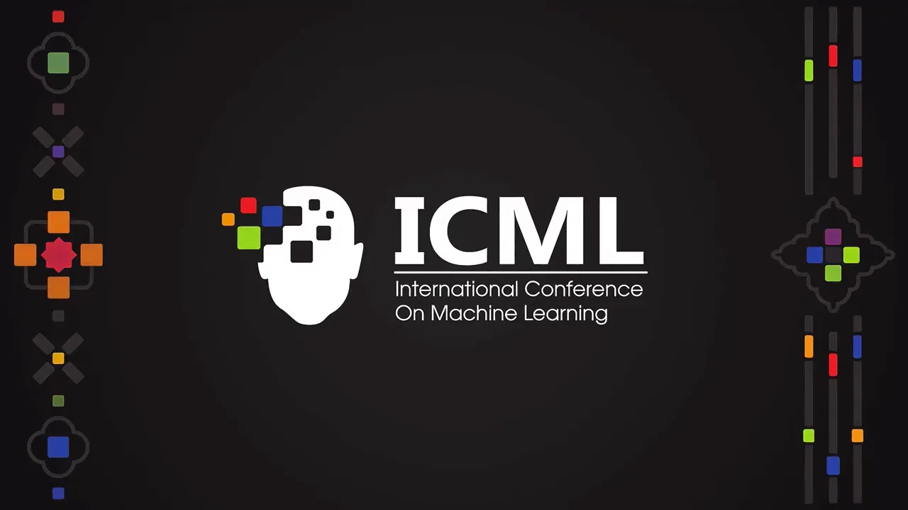
【0:00】ICML 国际机器学习大会标题卡（会议开场页）
[22:55 – 23:48]
Testing. I think we're gonna get started so we don't run out of time. So my name is Loren. I'm joined with my friend and colleague Lucas. We're both from Jump Trading and today we're going to talk to you about some lessons learned building multi-agent systems and benchmarks and evals for this. Thank you all for getting up early. Although if you're jetlagged like I am, maybe it wasn't as hard to get up early as you thought it was going to be. So with that why don't we just jump right in because there's a lot of fun things to cover. So to start maybe just
测试。我想我们要开始了，这样我们就不会没有时间了。所以我的名字叫洛伦。我和我的朋友兼同事卢卡斯一起。我们都来自 Jump Trading，今天我们将与您讨论构建多代理系统以及为此进行的基准和评估的一些经验教训。谢谢大家早起。不过，如果您像我一样时差，也许早起并不像您想象的那么难。既然如此，我们为什么不直接跳进去呢，因为有很多有趣的事情要讲。所以开始也许只是
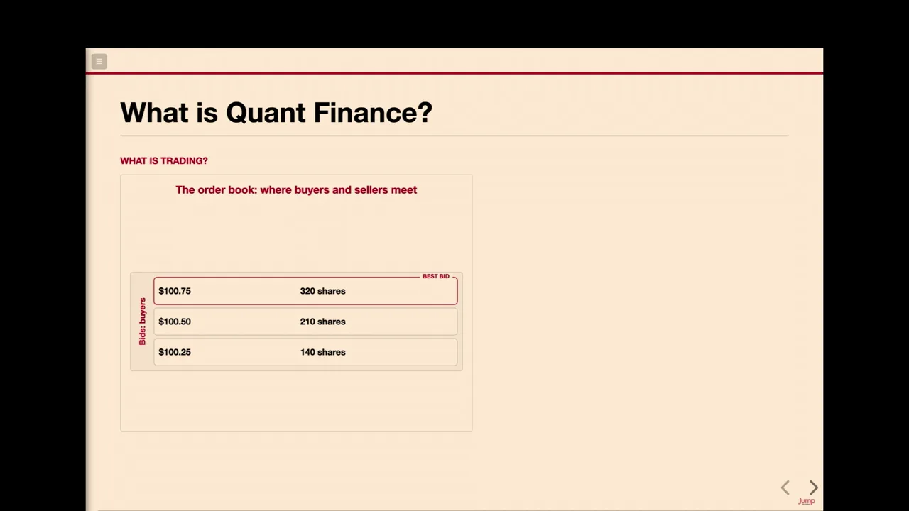
【23:44】What is Quant Finance? — The order book: where buyers and sellers meet · 买卖盘口：列出多档 Class A–D 报价（20–50 股）
[23:49 – 24:36]
want to talk a bit about what is trading and what is quant finance and why this is interesting from an AI machine learning point of view. So the order book is kind of the core data structure that we have on these electronic exchanges. So here I've drawn a bunch of the bids. These are people who want to buy shares and you see right now the best bid is 100 spot 75 and there's also people wanting to sell. They're sending orders into the order book and here the best ask as I've drawn it here is 100 and 1 even and right now there's no trade happening right. These prices are different
我想谈谈什么是交易、什么是量化金融，以及为什么从人工智能机器学习的角度来看这很有趣。因此，订单簿是我们在这些电子交易所中拥有的核心数据结构。所以我在这里抽出了一堆投标。这些人想要购买股票，您现在看到的最佳出价是 100 点 75，也有人想要出售。他们正在将订单发送到订单簿中，而我在这里绘制的最佳要求是 100 和 1，而且现在没有正确的交易发生。这些价格不一样
开场与 Order Book
- Order book 是电子交易所的核心数据结构（bid / ask / spread）。一笔交易如何推动盘口与价差。
- 量化研究的本质：用数学与 AI 建模盘口状态、交易信号，预测价格走势并决定交易量与价格。
- 两种策略：fast（速度，套利跨所延迟差）vs smart（小 edge × 大规模）。Jump 两者都做，存在内在权衡。
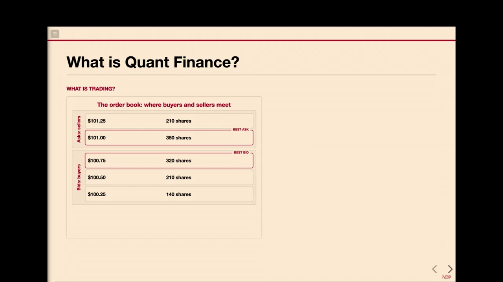
【24:19】What is Quant Finance? — The order book（扩展） · 继续展开 order book，加入更多档位（Class A 20 → Class D 50 shares）
[24:36 – 25:20]
they don't overlap and the spread is 25 cents but something happens a trade happens someone comes in and trades at 101 even and buys 350 shares and I guess something interesting to point out is I say someone did the trade here one because you know this is a made-up example for a talk but also because these exchanges at least especially in equities are anonymous. You don't actually know who is doing the trading but this trade moved the market right. The best ask is now 101 spot 25 at 210 shares so there's a 50 cent spread now instead of a 25 cent spread
它们不重叠，价差为 25 美分，但发生了一些交易，有人进来并以 101 平价进行交易并购买了 350 股，我想值得注意的是，我说有人在这里进行了交易，因为你知道这是一个虚构的演讲示例，但也因为这些交易至少特别是在股票方面是匿名的。你实际上并不知道谁在进行交易，但这次交易使市场走向了正确的方向。现在最好的要价是 101 现货 25 210 股，因此现在的价差是 50 美分，而不是 25 美分
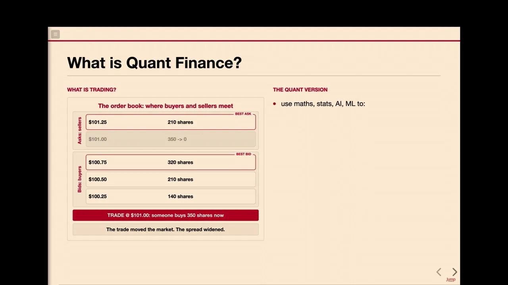
【25:20】What is Quant Finance? — What is the tension? · Order book + 引入量化决策的两难（fast vs smart）
【25:08】What is Quant Finance? — What is the tension? · Order book 与延迟、信号的不对称：速度 ↔ 智能的张力
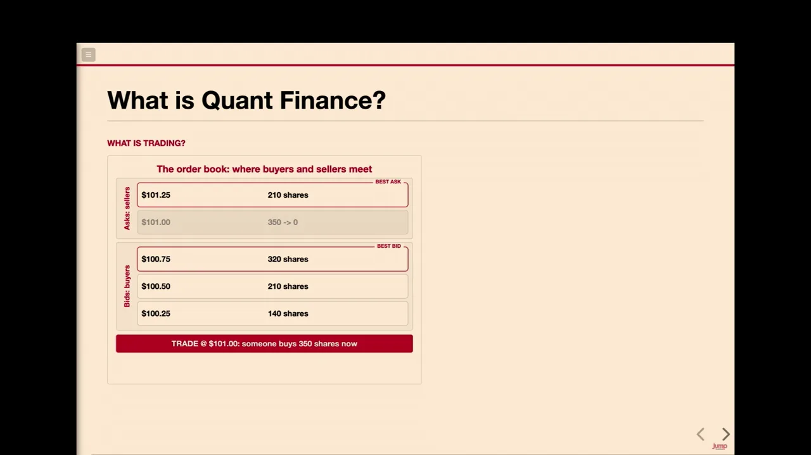
【24:40】What is Quant Finance? — What is the tension? · Order book: where buyers and sellers meet
[25:21 – 25:42]
and the quant version of this is you know use math use AI figure out how much of this you can model how much you can predict the state of the book the trades related signals estimate how prices are going to move ultimately to decide what to trade at what price how much.
这个的量化版本是你知道使用数学使用人工智能计算出你可以建模多少你可以预测书的状态交易相关信号估计价格最终将如何变动以决定以什么价格交易多少。
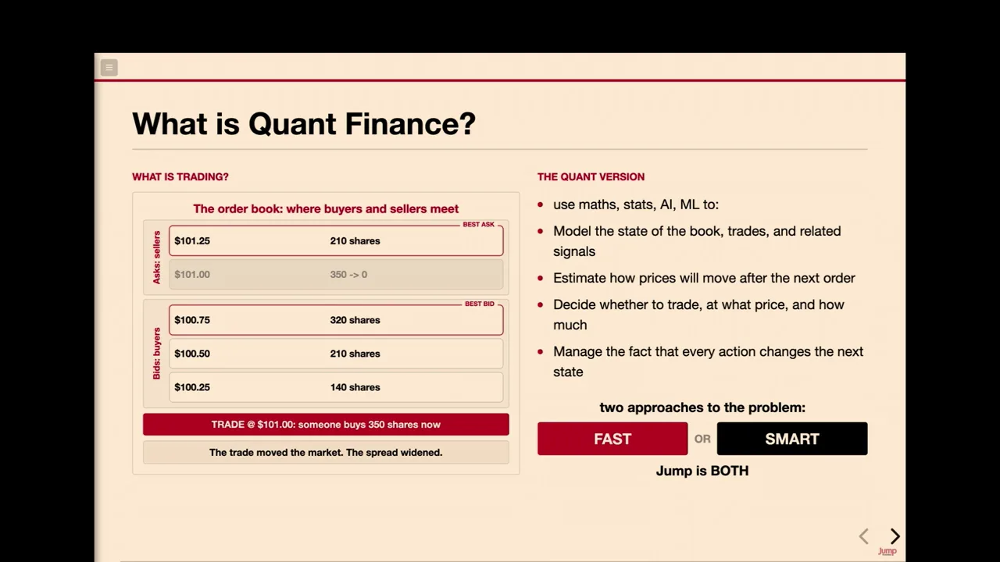
【25:42】What is Quant Finance? — New approaches · FAST vs SMART 两列对比：FAST $100–$10K / Stocks $1K；SMART：信息更多但延迟大
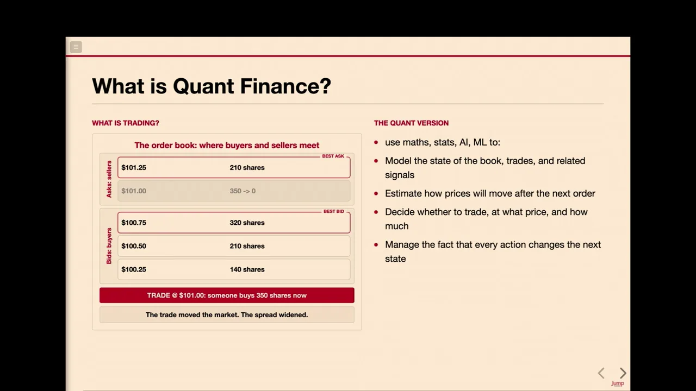
【25:41】What is Quant Finance? — What is the tension? · Manage the fact that every action changes the next state
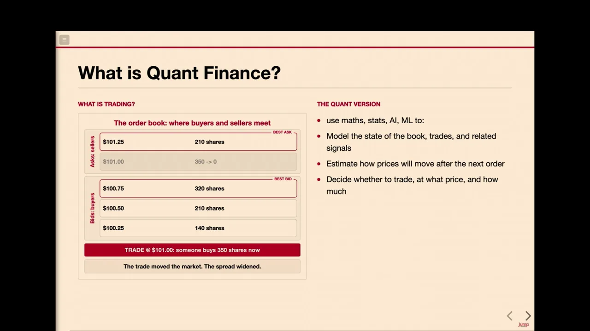
【25:35】What is Quant Finance? — What is the tension? · Decide whether to trade, at what price, and how much（继续）
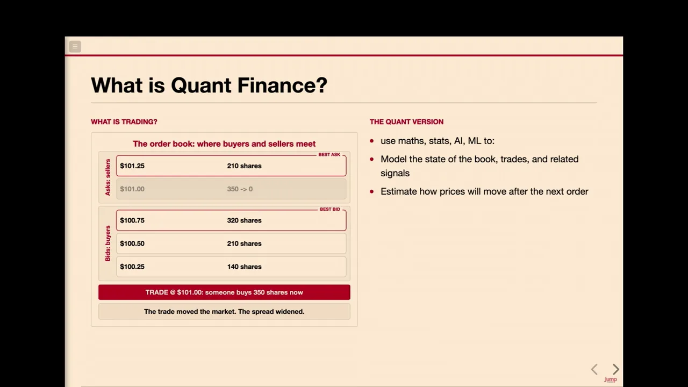
【25:33】What is Quant Finance? — What is the tension? · Decide whether to trade, at what price, and how much
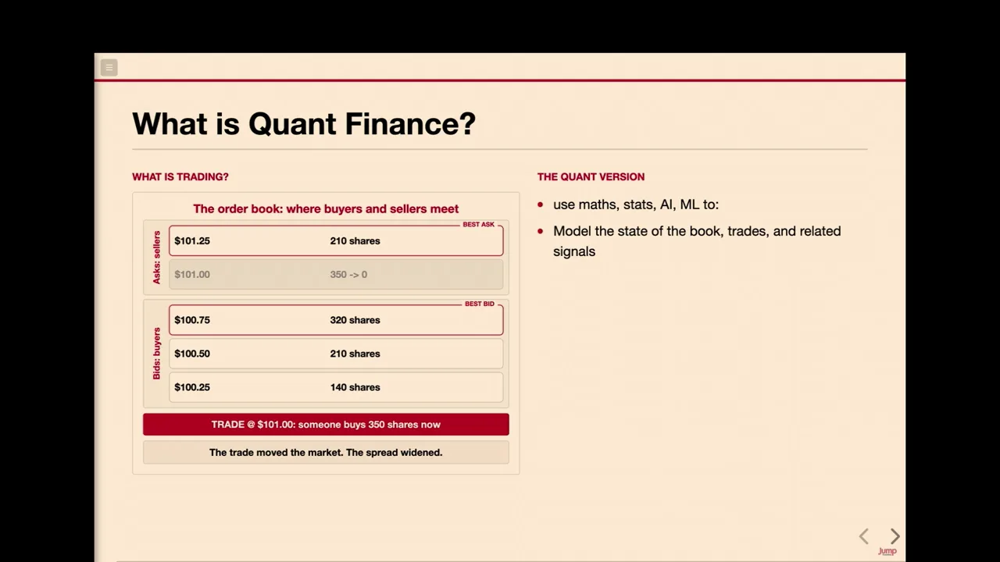
【25:29】What is Quant Finance? — What is the tension?（右侧栏出现） · THE QUANT QUESTION: data weights α/AI/ML/RL；order book shows buyers/sellers meet at explicit prices
[25:44 – 26:13]
So there's two rough strategies how to think about this right you can be fast try to figure this out before anyone else or you can try to be smart you know figure it out more accurately for some definition of accuracy and jump tries to be both there's a very interesting trade-off between these two which I'll get back to in a few slides but first maybe who is jump trading like who are we
因此，有两种粗略的策略如何正确思考这一点，您可以快速尝试在其他人之前弄清楚这一点，或者您可以尝试变得聪明，您知道更准确地计算出准确性的某些定义，并且跳跃尝试两者都有，这两者之间有一个非常有趣的权衡，我将在几张幻灯片中回顾，但首先也许谁在跳跃交易，就像我们是谁一样
Jump Trading 与量化金融基础
- 自营交易公司：无外部投资人，交易自有资金；1999 年芝加哥成立，现 12+ 个全球办公室。
- 工程侧保速度：co-location、自定义网络、FPGA、ASICs 与自研芯片。
- 研究侧保精度：大数据、GPU 集群、预测模型。两者结合才能在全球多资产多周期上做电子化交易。
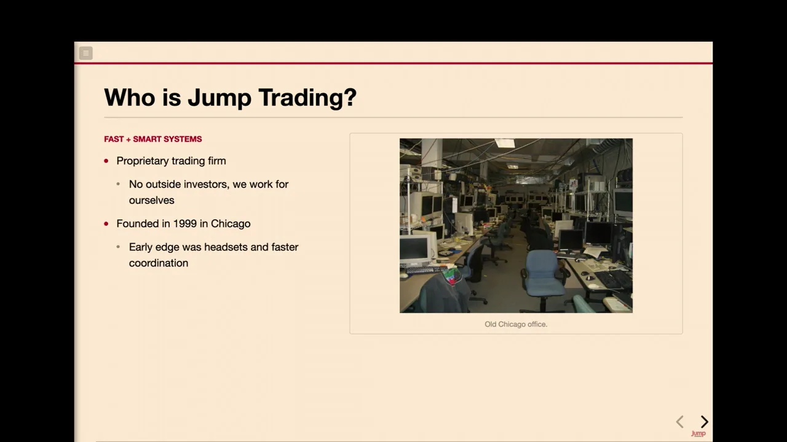
【26:09】Who is Jump Trading? — 1999 芝加哥成立 · Proprietary trading firm · 100+ market-makers · 1,500+ data & ML 工程师
[26:16 – 26:58]
so we're a proprietary trading firm well what that means is we have no outside investors right we work for ourselves trade our own money and you know hopefully over the years end up with more money so we can trade in more look venues and so we were founded in 1999 in Chicago back then the early edge to be fast was headsets because you know go figure radio waves move faster than sound and here's you know an old photo of the old Chicago office not sure exactly when this photo was taken but you know CRT monitors so turn the century seems most likely
所以我们是一家自营贸易公司，这意味着我们没有外部投资者，我们为自己工作，用自己的钱进行交易，你知道，希望这些年来最终能得到更多的钱，这样我们就可以在更多的场所进行交易，所以我们于 1999 年在芝加哥成立，当时快速的早期优势是耳机，因为你知道无线电波比声音传播得更快，这是你知道芝加哥老办公室的一张旧照片，不确定这张照片到底是什么时候拍摄的，但你知道 CRT 显示器，所以世纪之交似乎是最快速的可能
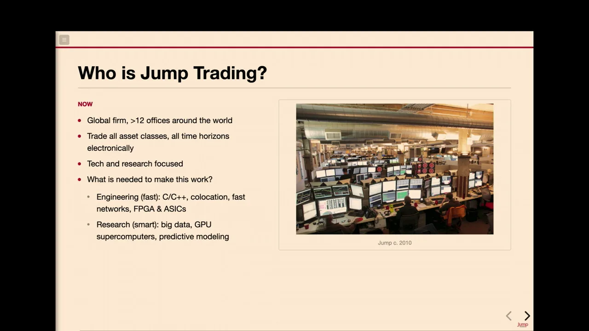
【26:58】Who is Jump Trading? — 全球化 · 20+ offices · 全资产类/多时间尺度交易 · 20+ 货币盘口 · 工程栈：C++/Python/数学/统计 · 研究：Chicago/NYC/LA
[26:59 – 27:15]
um sorry who is jump trading now well now we've grown into a global firm right we have more than 12 offices around the world and we trade all asset classes at all time horizons electronically
抱歉，现在谁在进行跳跃交易 现在我们已经成长为一家全球性公司，我们在世界各地拥有超过 12 个办事处，并且我们在所有时间范围内以电子方式交易所有资产类别
[27:16 – 28:04]
and to do that you need to be focused on both tech engineering and research right engineering helps you go fast co-located servers fast custom networks fpgas ASICs custom chips all of this and the research helps you do it you know as smart in a smarter way as you can big data gpu supercomputers all of this to build predictive models and my speaker notes tell me to say that this is a newer photo of the jump office one of our new offices but you'll notice the text at the bottom this photo is 15 years old already but you know the trends continue we have more monitors
要做到这一点，你需要专注于技术工程和研究，正确的工程可以帮助你快速实现同地服务器、快速定制网络、fpgas ASIC、定制芯片所有这一切，研究可以帮助你以更智能的方式做到这一点，就像你可以用大数据 GPU 超级计算机一样聪明，所有这些都可以构建预测模型，我的演讲者笔记告诉我，这是我们新办公室之一的跳跃办公室的新照片，但你会注意到底部的文字这张照片已经有 15 年历史了，但是你了解趋势继续我们有更多的监视器
[28:04 – 28:48]
they're thinner it's great cool and why are we here well we've actually been coming to these conferences for many years now to you know learn about what the state of the art is and where we can apply it but the last few years we've been you know trying to do this more publicly and try to give back right we actually have a sponsor booth i think it opens tomorrow so you know stop by say hi get a coffee and today what we like to talk about is some lesson learned as we're trying to build these quant like quantum mental agents systems you know how we build them
它们更薄了，太酷了，为什么我们能在这里呢？我们实际上已经参加这些会议很多年了，让你们知道什么是最先进的技术以及我们可以在哪里应用它，但在过去的几年里，我们一直在努力更公开地做到这一点，并尝试回馈我们实际上有一个赞助商展位，我想它明天就会开放，所以你们知道停下来打个招呼，喝杯咖啡，今天我们想谈论的是我们在尝试构建这些像量子智能代理一样的量化时学到的一些经验教训您知道我们如何构建它们的系统
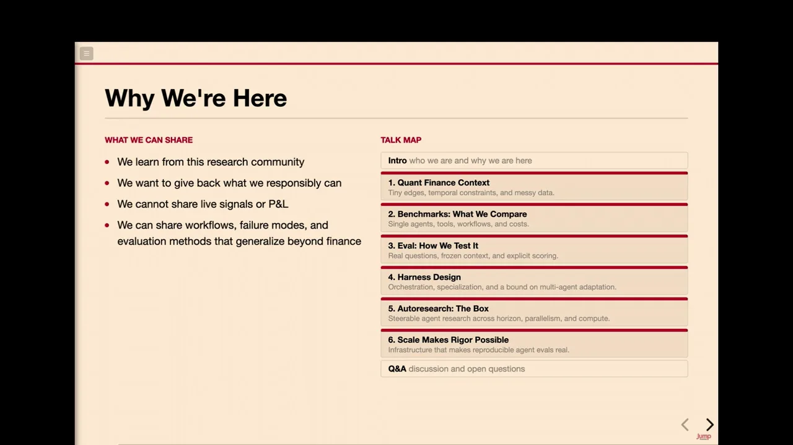
【28:07】Why We're Here — 与研究社区互动 · Give back what we learned · 共享 workflows / failure modes / evaluation methods（右侧：Your input — Agent Design Pattern / Failure Mode Catalog / Research Insight Index）
[28:48 – 29:35]
how we build the benchmarks for them and how that feeds back into the design excuse me so uh maybe quick just some more quant finance background why this is a very interesting problem for machine learning and ai so before i said the two approaches are you can be fast or smart um but there's a real tension between theirs and their trade-off here that hopefully i can explain so let's say you have two exchanges right paris and berlin and at the start they're both trading at 100 100 dollars let's say this is the mid price right now there's some trade that happens in paris
我们如何为它们建立基准以及如何反馈到设计中，对不起，呃，也许很快，只是一些更量化的金融背景，为什么这对机器学习和人工智能来说是一个非常有趣的问题，所以在我说这两种方法之前，你可以快速或聪明，嗯，但他们的方法和他们的权衡之间存在真正的紧张关系，希望我能解释一下，所以假设你在巴黎和柏林有两个交易所，一开始它们的交易价格都是 100 100 美元假设这是现在的中间价格，巴黎有一些交易
信息传播、延迟套利与时间旅行泄漏
- Paris vs Berlin 案例：交易所之间的信息传播有时间差，先到者可做套利；但价格有效性建模会带来 ringing effect。
- 51% biased coin：只要小 edge 乘以海量独立样本（且严格风控）就能稳定盈利——为后面讲多 agent 的"规模换精度"埋下伏笔。
- "Time travel is the default failure mode"：模型在 backtest 中偷看未来数据，曲线在 cutoff 后崩。
- Point-in-time 正确性至关重要：预测目标不仅是价格，还包括成交量、时点、跟单风控、坏单检测；数据本质是多模态（订单簿、内部状态、新闻、基本面）。
【29:21】Fast or Smart? — FAST vs SMART 对比（续） · 继续介绍 FAST 与 SMART 在 multiple markets 的不同 trade-off
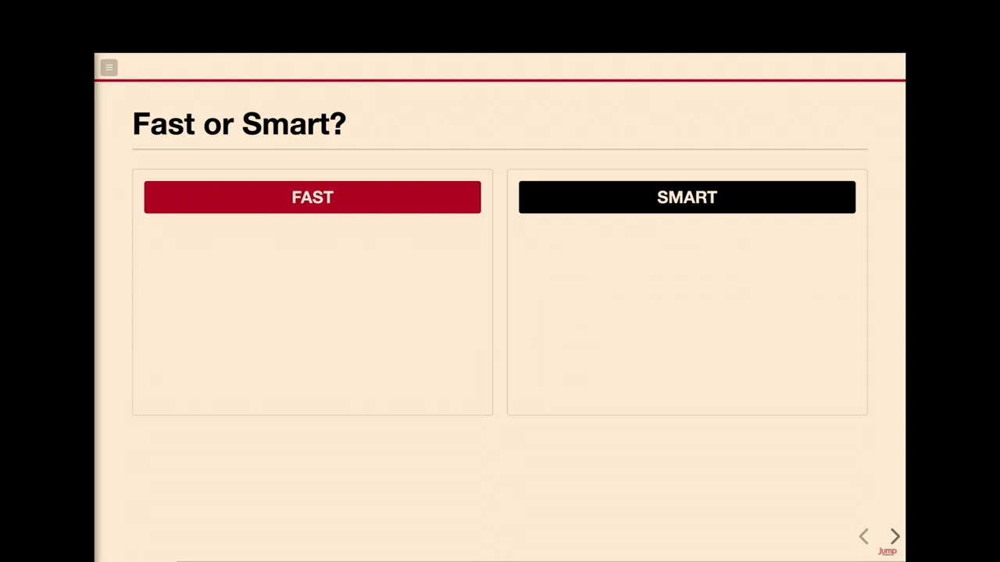
【29:08】Fast or Smart? — FAST vs SMART 对比 · FAST: Gets bored, Jams；many wrong, $/s $100–$10K · SMART: Gets smarter
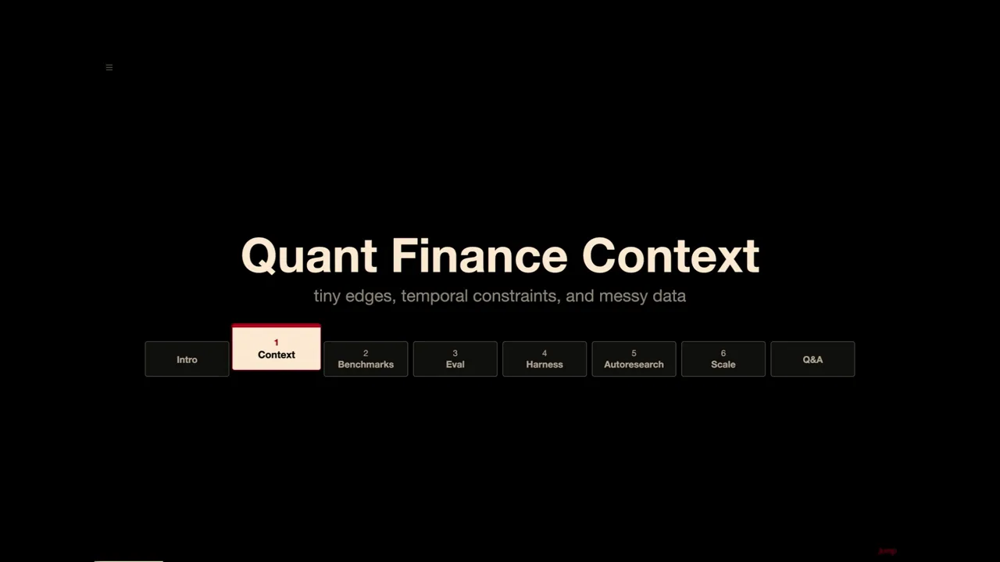
【28:54】Quant Finance Context — keys, temporal constraints, messy data · 产品 × 类别 × 延迟矩阵（edges / temporal / messy data）
[29:35 – 30:16]
the mid point moves to 105 but like these are different spots on the globe it takes time for the information to travel so even though paris has updated to 105 berlin is still at 100 um right and so if you can be the first to deliver that information right you can you can do some trades in berlin and there's actually a very interesting part here i've glossed over it's like why do you believe the price in paris versus berlin um you know maybe 100 is still the true thing and there there are trades to be done in in paris um so depending on how you model that
中点移动到 105，但就像地球上的不同地点一样，信息传播需要时间，所以即使巴黎已经更新到 105，柏林仍然是 100 嗯，所以如果你能成为第一个正确提供该信息的人，你可以在柏林进行一些交易，实际上这里有一个非常有趣的部分，我已经掩盖了，就像你为什么相信巴黎的价格与柏林的价格一样，你知道也许100 仍然是真实的事情，并且在巴黎有一些交易要做，所以取决于你如何建模
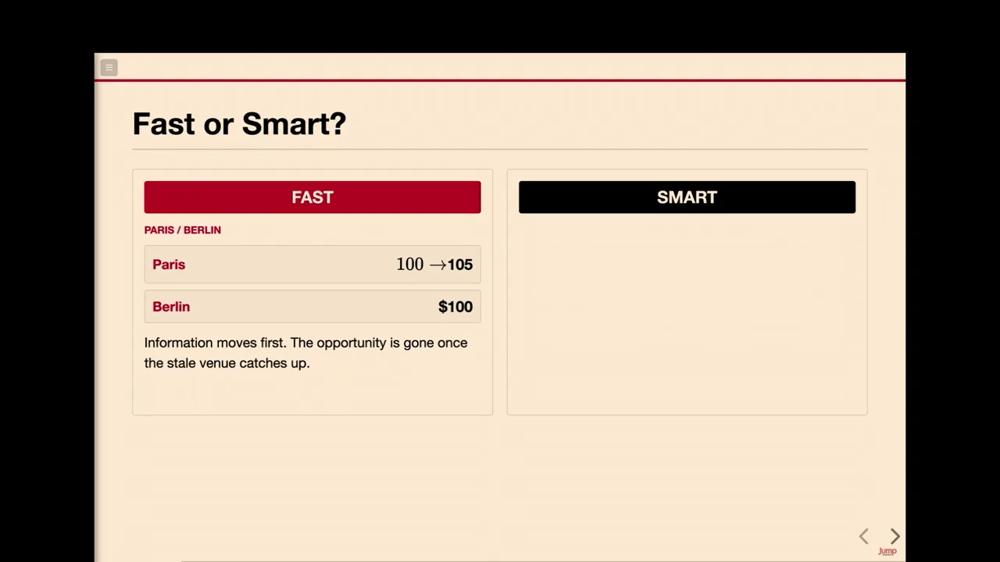
【29:50】Fast or Smart? — FAST vs SMART 对比 · Stocks $1000 / 信息更密集但单笔决策更重
[30:16 – 31:04]
there's actually a very interesting ringing effects you get where you can see the information bounce back and forth between exchanges um so the other point right trying to be smart um i want to point out you don't have to be perfectly smart right you don't have to be 100 accurate with the best model um if you have a very small edge let's say 51 biased coin flips um but you can do it at scale this can work out so here you see on this chart this is a biased 51 coin 100 flips and um sorry we start out at zero that's what i should say the point on that on the left
实际上，你会得到一个非常有趣的振铃效应，你可以看到信息在交易所之间来回反弹，嗯，所以另一点是想变得聪明，嗯，我想指出，你不必非常聪明，对吧，你不必用最好的模型达到 100 准确，嗯，如果你的边缘很小，比如说 51 次有偏差的硬币翻转，嗯，但你可以大规模地做到这一点，这可以解决，所以你在这张图表上看到，这是一个有偏差的 51硬币翻转 100 次，抱歉，我们从零开始，这就是我应该说的左边的点
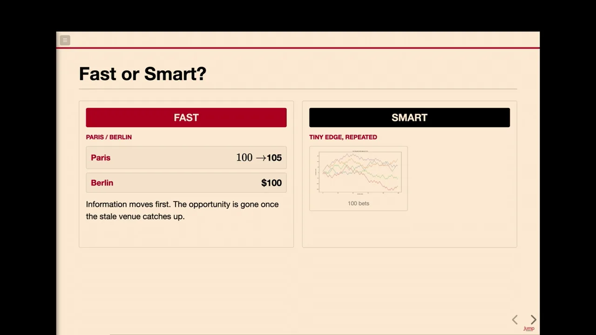
【30:24】Fast or Smart? — 右侧加入示意图表 · FAST 路径短但风险高；SMART 路径长但单笔利润高
[31:05 – 31:07]
and over time you see about half of them are positive half are negative
随着时间的推移，你会发现其中大约一半是积极的，一半是消极的
[31:09 – 31:53]
not too great but if you can be smart in such a way that you can do this 10 000 times and you know you you manage your risk and everything so you don't blow up at some point um then everything ends up positive at the end right so as long as you can have a small predictive edge in enough scenarios where you can do this at scale it can work out but the the tension i want to get at and how this applies to ai is so on the fast horizons you have many many observations simple signals can work and you have a very low latency but on the smarter horizons right you have richer contexts
不太好，但如果你能聪明地做到这一点，你可以这样做10000次，并且你知道你可以管理你的风险和一切，这样你就不会在某个时候爆炸，那么一切都会在最后得到积极的结果，只要你能在足够多的场景中拥有一个小的预测优势，你可以大规模地做到这一点，它就可以解决，但我想要得到的张力以及它如何应用于人工智能是如此快速的地平线，你有很多观察简单的信号可以发挥作用，你有延迟非常低，但在更智能的视野中，您拥有更丰富的上下文
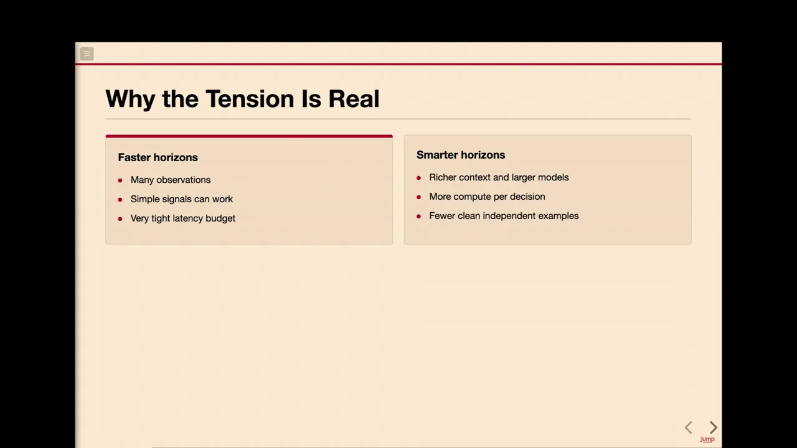
【31:35】Why the Tension Is Real — Faster functions · More markets are weaker · Slower signals are weak · Multi-agent area is huge
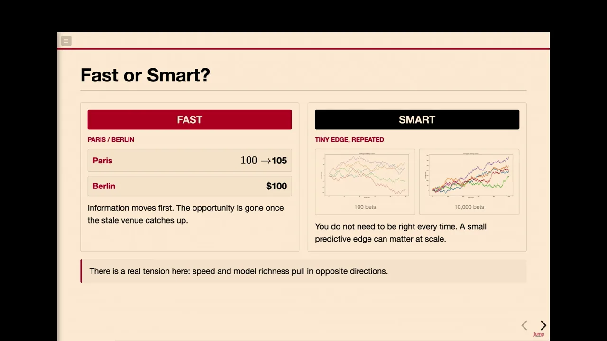
【31:32】Fast or Smart? — 同样的对比（再次出现） · 强调 fast 与 smart 不是非此即彼
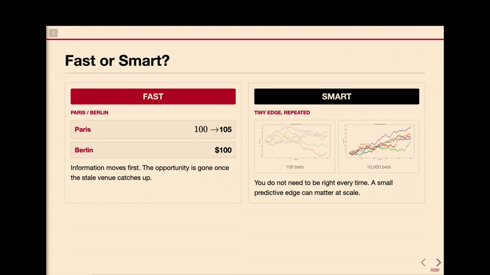
【31:23】Fast or Smart? — You do not need to be fast every time · A smart prediction might just be 0.0001 in 100%
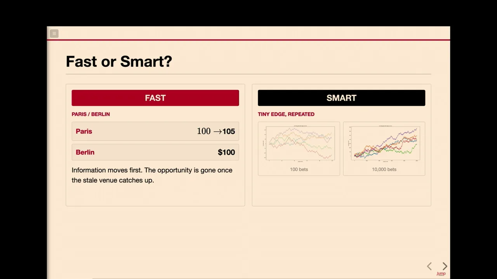
【31:13】Fast or Smart? — We have to decide both · Opportunity to game out the 'rational version of bubble up'
[31:53 – 32:41]
you can have bigger models but also the larger models directly imply you have less data right if you double your context length and you still want independent samples then immediately you have half as much data which is very different from a lot of other problems in in ai machine learning and i want to point out here with these graphs which i have conveniently left all of the labels off of so here we have a green and a red trade and and back testing results and we have this dotted line you see the both of them look quite reasonable to the to the left of the dotted
你可以有更大的模型，但更大的模型也直接意味着你有更少的数据，如果你加倍你的上下文长度，并且你仍然想要独立样本，那么你立即就有一半的数据，这与人工智能机器学习中的许多其他问题非常不同，我想在这里指出这些图表，我方便地留下了所有标签，所以这里我们有一个绿色和红色的交易和返回测试结果，我们有这条虚线，你可以看到它们在左边看起来都相当合理点缀的
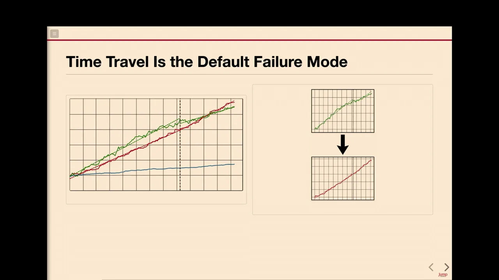
【32:15】Time Travel Is the Default Failure Mode（折线图） · 回看未来 = 默认失败模式；红线/绿线表示 ground truth 与预测差距随时间放大
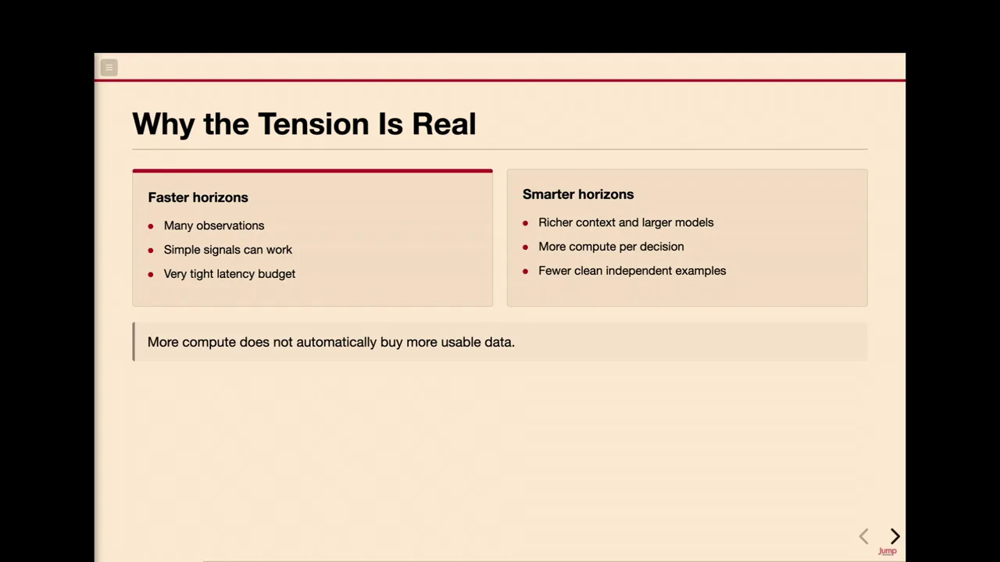
【32:13】Why the Tension Is Real — Smarter functions · Money & lag inputs · Multi-input flow model · Flash class independent outcomes
[32:41 – 33:17]
line but afterwards there's this kink in the green one and what this is is this is the training knowledge cutoff for the model right so like in back test it looked great but once we move past the knowledge cutoff date it starts performing worse and so this is basically what i'm saying like time travel is the default failure mode right your model knows something about the future and you have not correctly modeled this in your in your back testing eval and so you've you've tricked yourself right you thought the green model looked better
但之后绿色的有一个扭结，这是什么，这是模型的训练知识截止日期，就像在回测中一样，它看起来很棒，但是一旦我们过了知识截止日期，它就开始表现更差，所以这基本上就是我所说的，就像时间旅行是默认的故障模式一样，你的模型知道关于未来的一些东西，而你没有在你的回测评估中正确地对此进行建模，所以你已经欺骗了自己，你认为绿色模型看起来更好
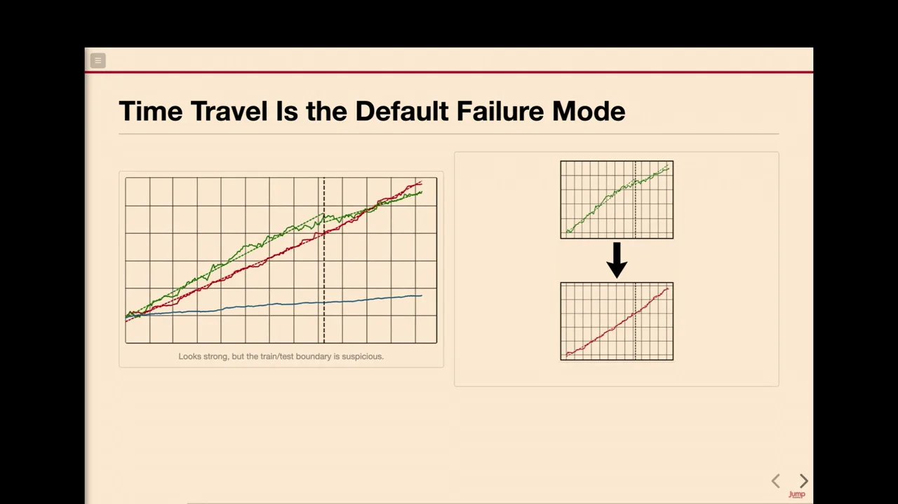
【32:46】Time Travel Is the Default Failure Mode（细节放大图） · 右下角放大细节：在 long horizon 上预测偏差迅速累积
[33:17 – 34:00]
in back test but really the red one that correctly takes into account point in time is the one you should have put into production yeah so what is knowable when is a big part of the problem and it's not so i've been talking a lot about price it's not just one it's not just one thing that we want to predict like the price there's also how much are you going to trade when are you going to trade it and you know doing one trade does that imply follow-up trades that you need to do in order to manage your risk and like bad trade detection right is there a way we can
在回溯测试中，但实际上正确考虑到时间点的红色那个是您应该投入生产的那个是的，所以什么是已知的，什么时候是问题的一个重要部分，但事实并非如此，所以我一直在谈论价格，它不仅仅是我们想要预测的一件事，比如价格，还有您要交易多少，您什么时候要交易它，您知道进行一笔交易是否意味着您需要进行后续交易才能管理您的风险以及不良交易检测是否正确，我们有什么办法可以
【33:54】This Isn't Just One Decision — Targets · State & information timing · Prevented data and position selection
【33:45】This Isn't Just One Decision — Targets（继续） · Push the state sequence using · Timing and evaluation strategy
【33:42】This Isn't Just One Decision — Targets · Key: stability & kernel base detection
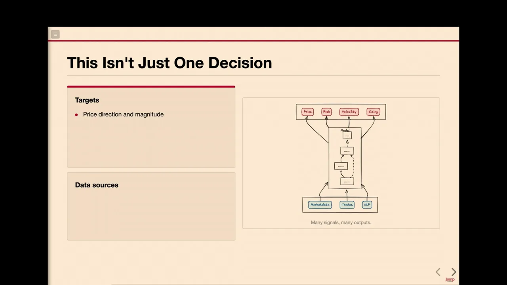
【33:33】This Isn't Just One Decision — Data sources（决策漏斗图） · Many states → many metrics → one action per state
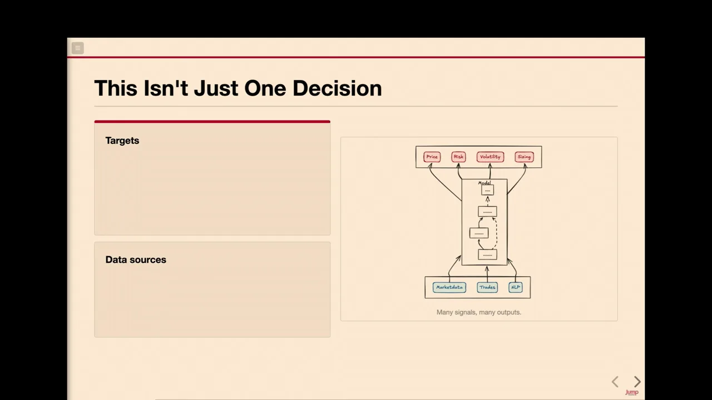
【33:31】This Isn't Just One Decision — Targets · Time detection & classification · One position gets filled · Retry / mobility · Timing & evaluation strategy
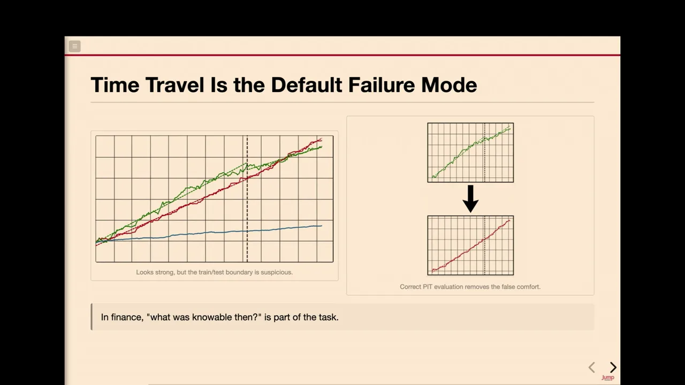
【33:25】Time Travel Is the Default Failure Mode（箭头指向 inset） · 指出微小误差在长 horizon 上的放大效应
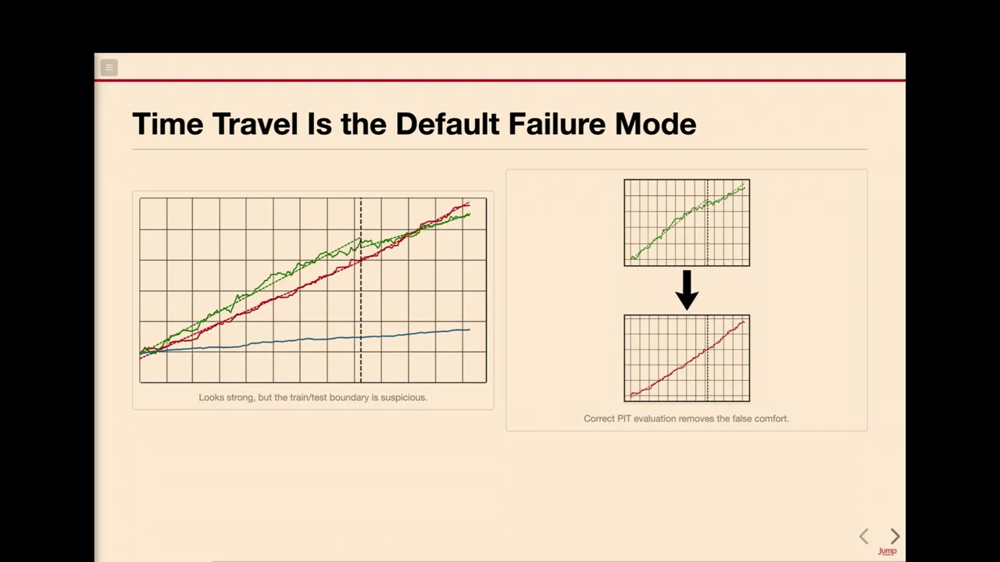
【33:24】Time Travel Is the Default Failure Mode（再次放大） · 强调 point-in-time 的必要性
[34:00 – 34:34]
detect that we've done a bad trade before we lose all the money or is losing the money like when we can when we actually notice it hopefully beforehand but i'll leave that as an exercise to the listener to figure that out and there's also a bunch of market data right it's inherently a multimodal problem like i said you can see you can see all the orders coming into the exchange but you also have your trades like your internal state you know which orders you've sent um and then there's other things like news fundamentals external events going on
在我们损失所有资金之前检测到我们做了一笔糟糕的交易，或者正在损失资金，就像我们实际上希望事先注意到的那样，但我将把它作为练习留给听众来弄清楚，而且还有一堆市场数据，这本质上是一个多模式问题，就像我说的，你可以看到你可以看到所有进入交易所的订单，但你也有你的交易，比如你的内部状态，你知道你发送了哪些订单，然后还有其他事情，比如外部新闻基本面正在进行的事件
Benchmark 方法学与 Point-in-time Eval
- 基线 = 单 agent + 单 harness；任何更复杂的方案必须改善指标——"complexity needs to be earned"。
- 可调维度是一个 k-dimensional hypercube：模型、harness、tools、context、workflow、budget、问题类型（firm-wide / market analysis / 组件任务）。
- 公开 benchmark 在 quant 场景下三大不足：temporal leakage、私域 workflow 与数据、问题类型不匹配。
- Point-in-time eval pipeline：挖掘研究员/quant/engineer 的真实对话（含来回纠错）→ 标注当时 point-in-time 信息 → 用 LM 生成 eval case → 跑不同 agent 组合 → 存全部 artifacts（cases / runs / results / traces / 模型间对比）。
【34:36】Benchmarks: What We Compare · How agents rank, workload, and plan（章节封面页，重复）
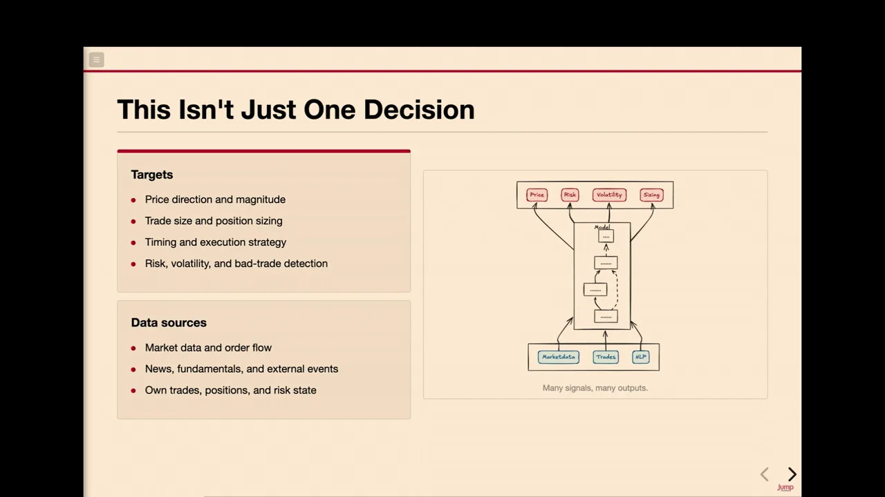
【34:34】Benchmarks: What We Compare · How agents rank, workload, and plan（章节封面页）
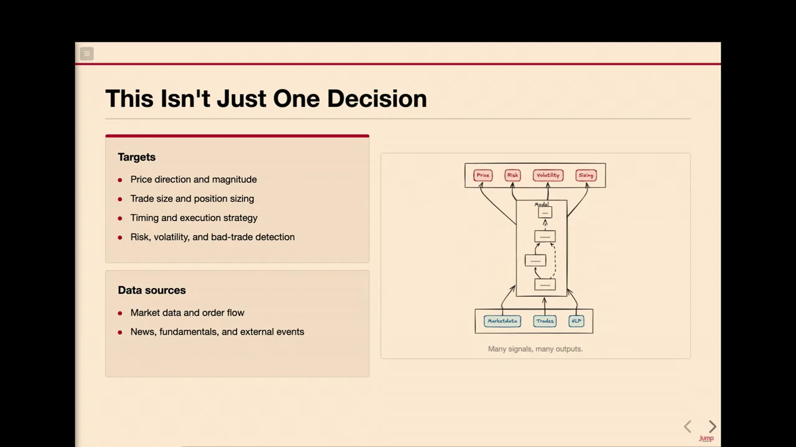
【34:30】This Isn't Just One Decision — Data sources · Decide data and state flow · Twice reversibility · preventer science
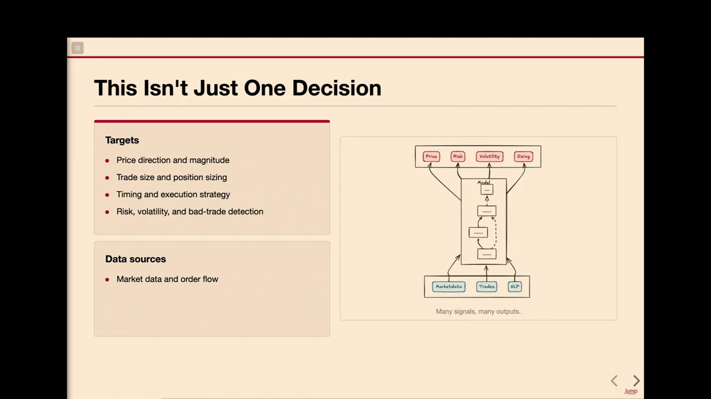
【34:13】This Isn't Just One Decision — Key · stability & kernel base detection（多次回到这条原则）
[34:40 – 35:36]
so that's some of the the quant finance background um so now how do we build um benchmarks to show that we're actually building agents to be useful and um well start with a simple baseline right single model uh the single harness one uh agentic loop that makes decisions maybe does some tool calls and so start with this baseline and then the rule is any fancier more complicated harness or model or or setup should improve the metrics right uh complexity needs to be earned so uh there's many many things we can now change right once we have a baseline we can hold fixed the
这就是一些量化金融背景，嗯，现在我们如何建立嗯基准来表明我们实际上正在构建有用的代理，嗯，我们将从一个简单的基线开始，正确的单一模型嗯，单一的工具，一个做出决策的代理循环，可能会进行一些工具调用，所以从这个基线开始，然后规则是任何更复杂的工具或模型或或设置应该改进指标，正确的复杂性需要赢得，所以呃，我们现在可以一次改变很多事情我们有一个可以固定的基线
【35:34】What Changes Between Runs? · Hard fixed 列表再次出现
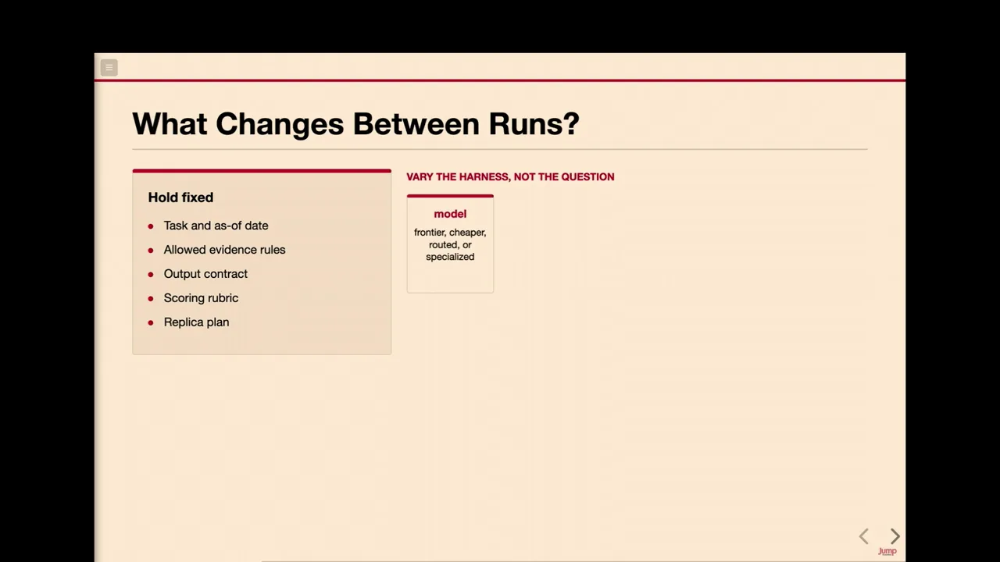
【35:33】What Changes Between Runs?（续） · 三列继续展开具体差异
【35:24】What Changes Between Runs? · 三列因素对比：Agents / Vendors / Backtesting
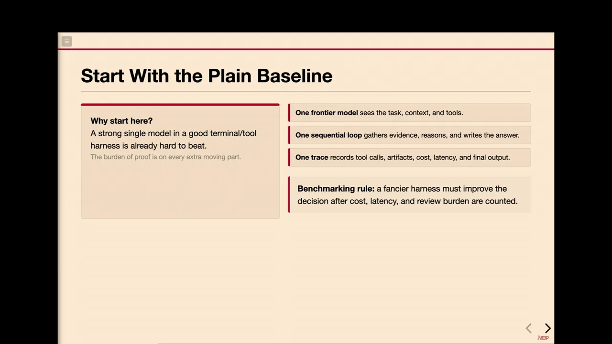
【35:09】What Changes Between Runs? — How the MARL sets up the agent · Hard fixed: Tanh & set rules / Readout collection rules / Random subsets / Scoring scales / Replicability
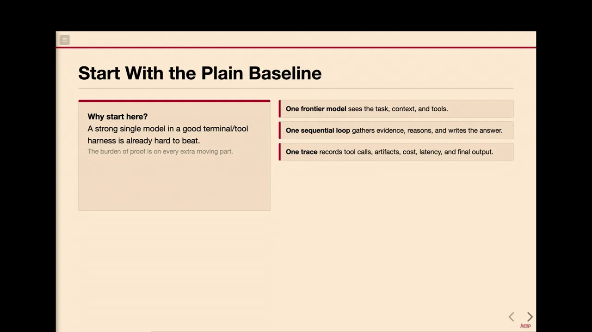
【35:07】Start With the Plain Baseline · Benchmarking holds a barrier between small improves tiny, subtasks, and double barrier that robust
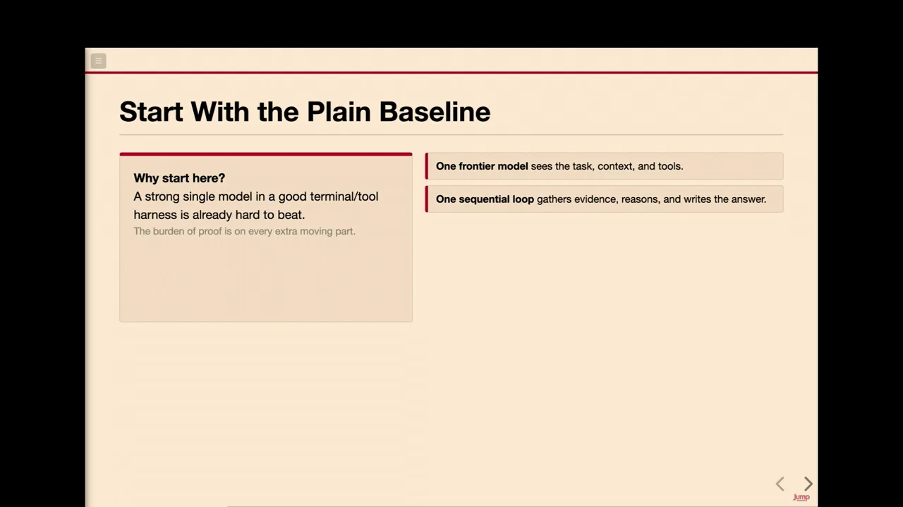
【35:03】Start With the Plain Baseline · Also a good first intuition, requires, and what to review
【35:02】Start With the Plain Baseline（同上重复） · 继续强调 plain baseline 的价值
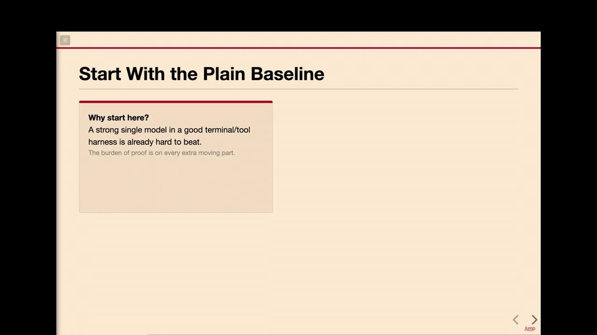
【34:55】Start With the Plain Baseline · The baseline model was the best, contact, and less · A strong simple model is a good benchmark · Strive forward is human a reach less impact
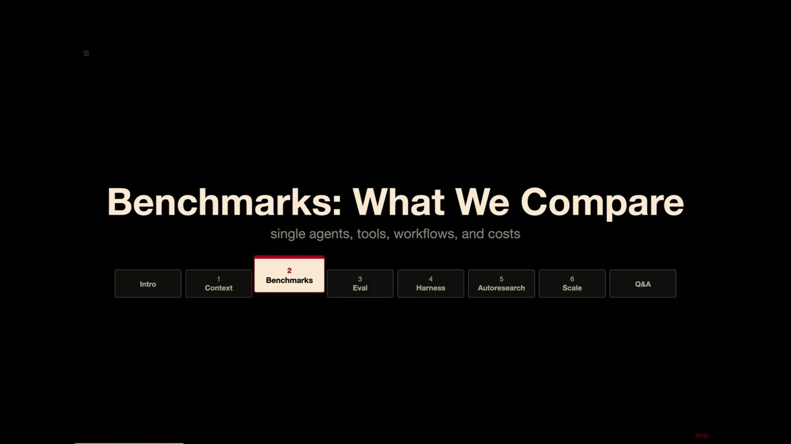
【34:47】Start With the Plain Baseline — Why start there? · Human money can rewrite a plan attribution · Humans is already hard to beat
[35:36 – 36:12]
tasks right and vary the harness vary the agent setup we can change the model you know frontier model or maybe some cheaper open weight model or different providers or specialized fine-tuned models we can change the tool setup you know maybe add some specific tools that query internal data sets or or run um back tests over our trading simulators we can try messing with the context you know put more information in there before we even ask the agent to run
任务正确并改变工具设置 改变代理设置 我们可以更改您知道的模型 前沿模型 或者可能是一些更便宜的开放权重模型 或不同的提供商或专门的微调模型 我们可以更改您知道的工具设置 也许添加一些查询内部数据集的特定工具，或者在我们的交易模拟器上运行嗯回测试 我们可以尝试弄乱您知道的上下文，在我们要求代理运行之前将更多信息放入其中
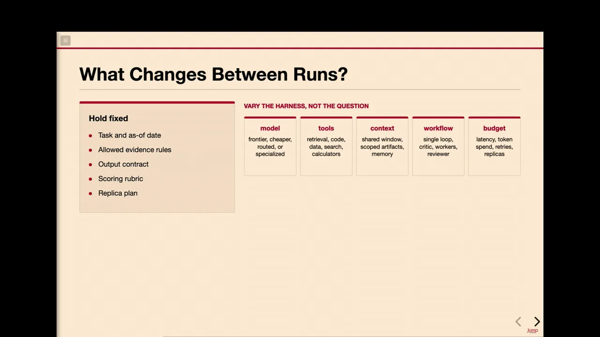
【36:14】Benchmark Families — Forecastable tasks · Early-point predictions: news today, tomorrow outcomes
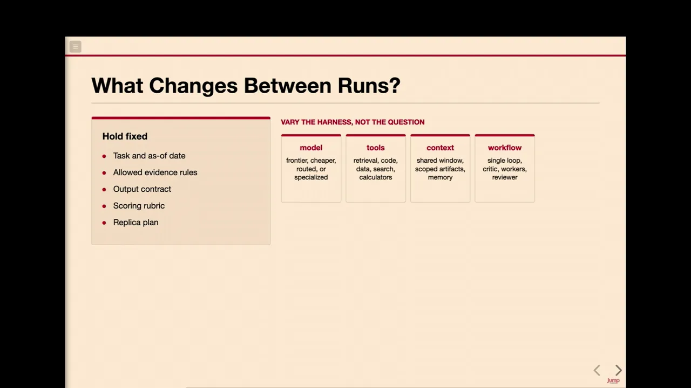
【36:12】What Changes Between Runs?（三列） · 三列收尾
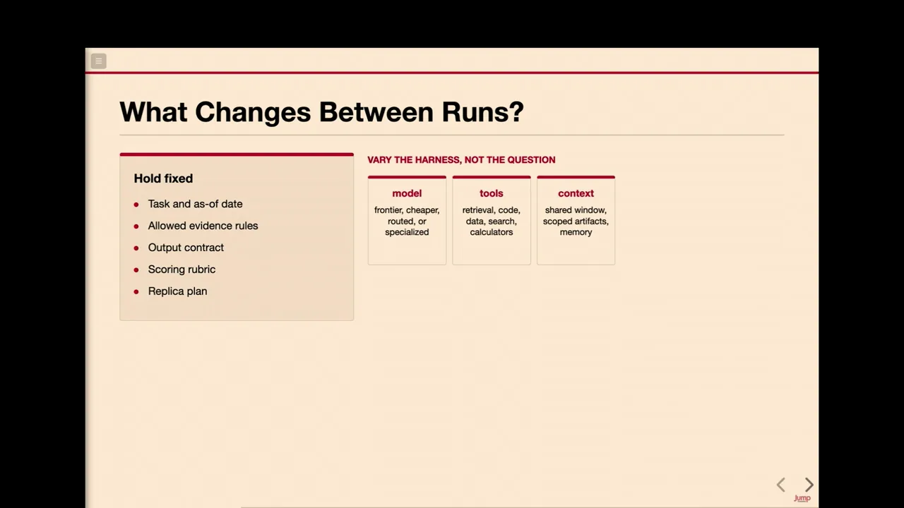
【36:05】What Changes Between Runs?（三列） · 三列继续展开
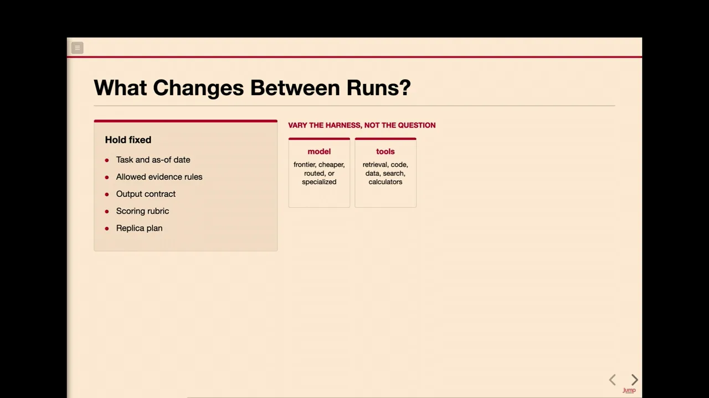
【35:51】What Changes Between Runs?（三列） · Agents / Vendors / Backtesting 三列各展开 2–3 个差异点
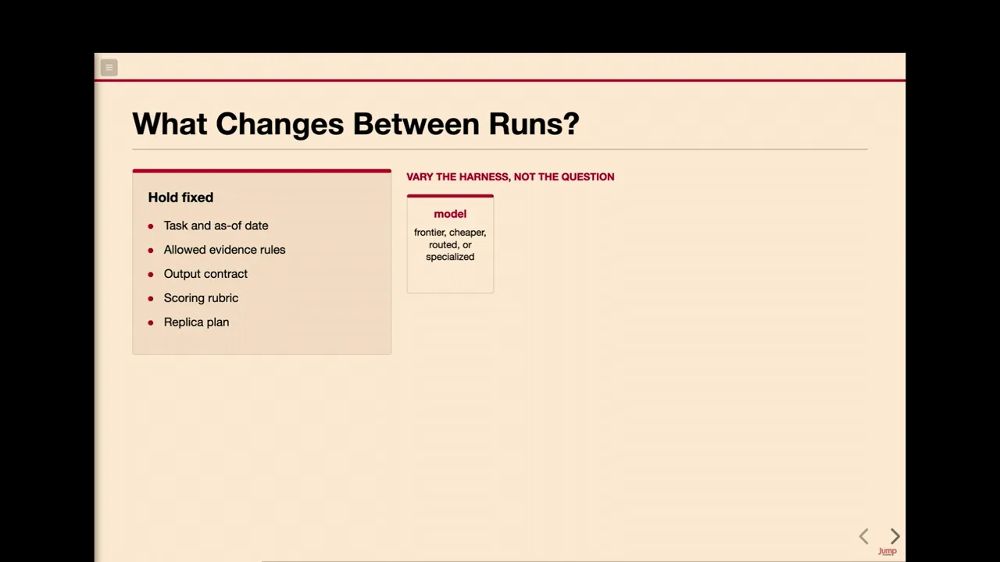
【35:39】What Changes Between Runs?（续） · What the MARL SETS UP THE AGENT
[36:14 – 36:47]
change up the workflow or the budget right um if we if we find a solution where we're spending ten dollars in tokens to make a one dollar positive vv trade that's not great that's that's also how you can bankrupt the company uh and then what type of questions are we asking well there's like firm-wide tasks you know can we get the agents to understand our internal code bases um our our supercomputer setups all the nuances and idiosyncrasies there
改变工作流程或预算，嗯，如果我们找到一个解决方案，我们花十美元的代币来进行一美元的正虚拟交易，这不太好，这也是你可以让公司破产的方式，然后我们要问什么类型的问题，就像公司范围内的任务，你知道我们能让代理了解我们的内部代码库，嗯，我们的超级计算机设置了所有的细微差别和特质。
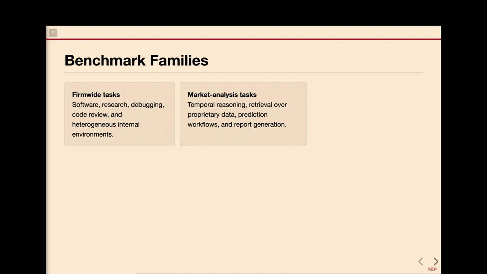
【36:48】Benchmark Families — 三类 · Forecastable / Market analysis / Component tasks（Trading & explanation, fact checks, managed scoring, post in alpha backtests）
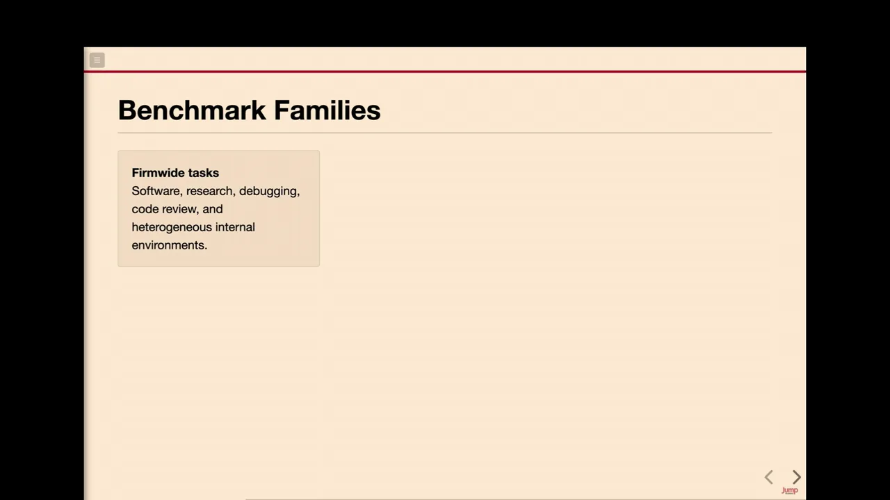
【36:31】Benchmark Families — Forecastable + Market analysis · Market analysis: Macro research, sensors, code reviews, post-detection workflows, target generation
【36:29】Benchmark Families — Forecastable tasks（续） · State-end, language: news, score tests, models
[36:49 – 37:28]
there's market analysis tasks you know does it understand finance you know earnings reports or sell side analyst reports things like this um and then there's individual component tasks you know can i retrieve uh the correct data does it select the right tools does it do the proper fact checks so already over these last three slides i've described this k-dimensional hypercube of different things we could try um and let's see i've been talking for 17 minutes so we probably can't go through the whole hypercube so why don't we just focus on this narrow slice market
有市场分析任务，你知道吗？它了解财务吗？你知道收益报告或卖方分析师报告之类的东西吗？还有一些单独的组成任务，你知道我可以检索呃，正确的数据吗？它选择了正确的工具吗？它做了正确的事实检查吗？所以在最后三张幻灯片中，我已经描述了这个包含不同事物的 k 维超立方体，我们可以尝试一下，嗯，让我们看看我已经讲了 17 分钟，所以我们可能无法遍历整个超立方体，所以为什么不呢？我们只专注于这个狭窄的市场
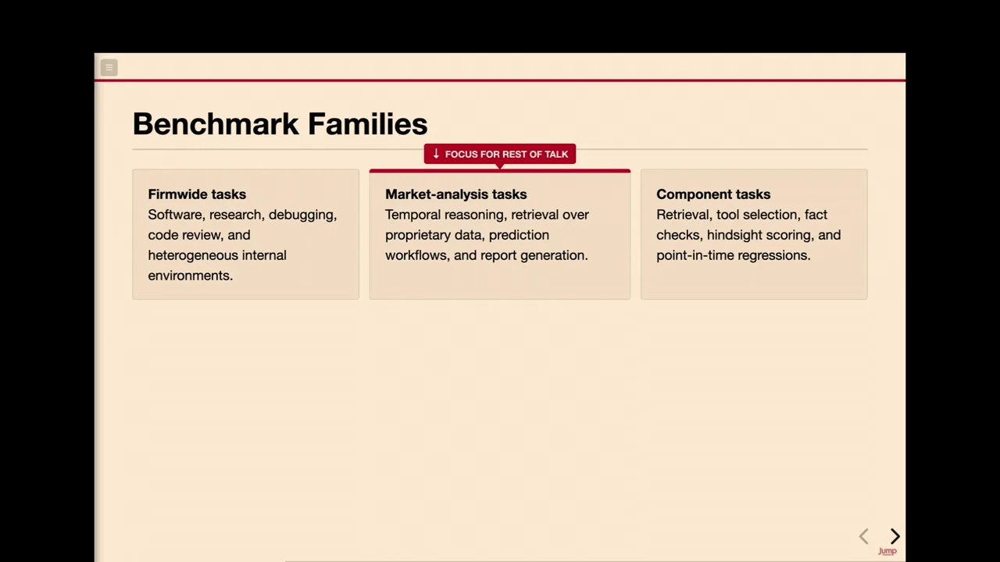
【37:24】What Counts as Better?（标题） · What Counts as Better?
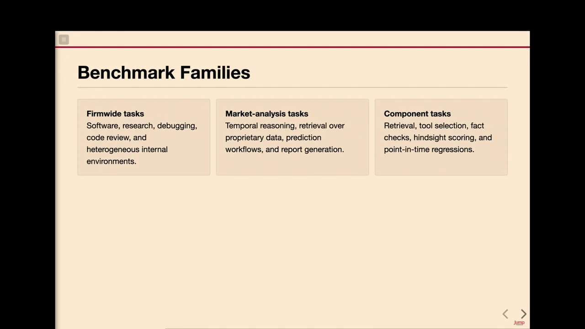
【36:58】Benchmark Families — Benchmark quality · 高亮：How to design（红框强调质量）
[37:28 – 37:55]
analyst tasks and yeah so what counts as better again it's not a single metric right the quality of the prediction you know how accurate it is is one um but also we want to make sure the agent isn't somehow cheating and pulling in future information um and like i said before the cost
分析师的任务，是的，所以什么才是更好，这不是一个单一的指标，正确的预测质量，你知道它有多准确，嗯，但我们也想确保代理不会以某种方式欺骗并提取未来的信息，嗯，就像我在成本之前所说的那样
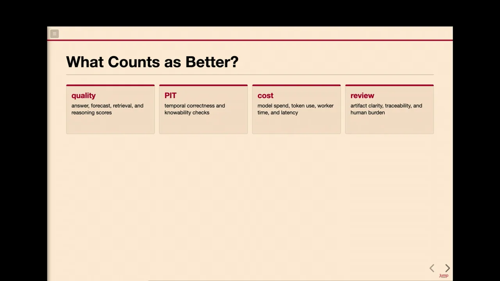
【37:55】What Counts as Better? — 三列收尾 · Quality / FIT / OTHER 完整对比
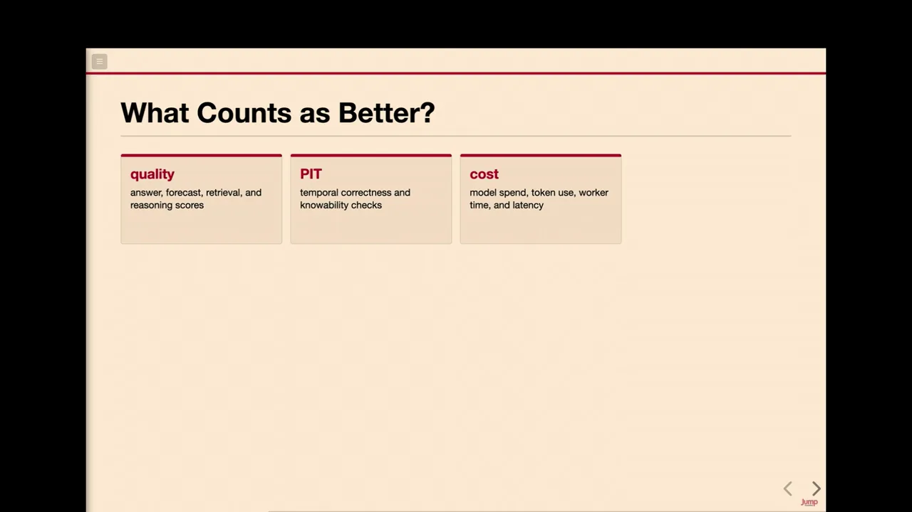
【37:52】What Counts as Better? — 三列 · 三列继续展开具体指标
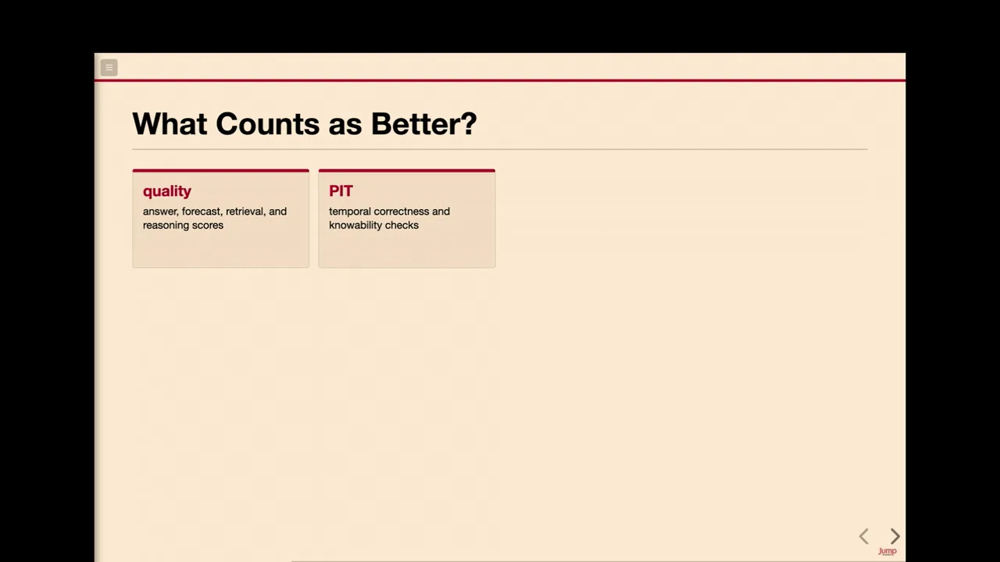
【37:43】What Counts as Better? — 三列 · Quality / FIT / OTHER: agents in double cash, defensive control during market reversals
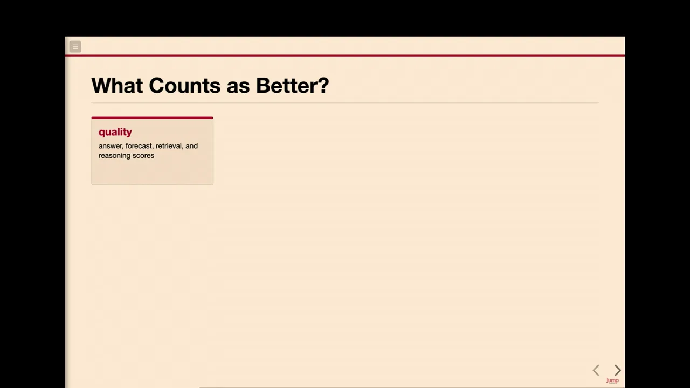
【37:30】What Counts as Better? — Quality + FIT · FIT: How fast to inference, latency, science, however low
【37:29】What Counts as Better? — Quality · How correctness, stability, and explicitness
[37:57 – 38:44]
are we actually doing this in a way that hopefully finds us better trades than what it costs to run all these multi-agent setups so those are the various things we can benchmark we have our benchmarking setup how do we come up with the evaluation questions and how do we run the evals so public benchmarks are great they can tell us a lot of things about the pros and cons of the different models but a lot of things specific to our problem are missing from public benchmarks from a lot of them the main one is like well maybe the main three are temporal leakage
我们实际上这样做的方式是否希望找到比运行所有这些多代理设置的成本更好的交易，所以这些是我们可以进行基准测试的各种东西，我们有我们的基准测试设置，我们如何提出评估问题以及如何运行评估，所以公共基准很棒，它们可以告诉我们很多关于不同模型的优缺点的信息，但很多针对我们问题的特定内容在公共基准中都缺失了，主要的可能是主要的三个是暂时的泄漏
【38:08】Point-in-Time Agent Eval Pipeline — 五步 · Head-end data → Forward sentiment flow → An agents and functions → Index reference & analyses → Production-scale latent conformance, repeatability, artifacts
【38:05】Why Public Benchmarks Are Not Enough — Real-world leakage · Models have home the future information · Private & hidden leakage · Weak environment (non-stationary, data & human factors)
[38:44 – 38:47]
like i was saying before the point in time correctness you know what it was knowable when
就像我在时间点正确性之前所说的那样，你知道什么是可知的
[38:49 – 39:31]
and private you know workflow of our questions right you know market data all of these different internal data sets we have and the types of questions we ask so what we built is kind of a system to do point in time agent eval so first we need to come up with the eval data set and so for that we've mined real conversations that our researchers and quants and engineers have with the with the chat bots and the ones that are most useful right is where there's some back and forth where there's the agent goes query some data sets
私人的，你知道我们问题的工作流程，你知道市场数据，我们拥有的所有这些不同的内部数据集以及我们提出的问题类型，所以我们构建的是一个进行时间点代理评估的系统，所以首先我们需要拿出评估数据集，为此我们挖掘了我们的研究人员、宽客和工程师与聊天机器人进行的真实对话，最有用的就是代理查询一些数据集的地方
【39:01】Eval Data Model: Make Runs Inspectable — Inputs/Records/Components/Artifacts/Documentation · Inputs: 新 agent 编号、标签 · Records: 设置/算法/hyperparams · Components: agent 与基线 · Artifacts: order logs/positions · Documentation: 版本
[39:32 – 39:41]
and then the human comes back in the next prompt it says oh actually you forgot you know this data set over here or you did some error in math or so on and so forth
然后人类在下一个提示中回来，它说哦，实际上你忘记了你知道这里的这个数据集，或者你在数学上犯了一些错误等等等等
[39:43 – 40:23]
we then take that we annotate all of the data and when the question was asked with point in time information and we use an lm to take that entire trace and generate the eval case right so to make the agent better right the perfect agent would need no human back and forth right it was just one shot and pick all the right data do all the correct tool calls none of the superfluous work so now we have these benchmark cases then we can actually run the different agents and replicas across this this hypercube that i was describing before store all of the
然后，我们注释所有数据，当用时间点信息提出问题时，我们使用 LM 来获取整个跟踪并正确生成评估案例，以便使代理更好，完美的代理不需要人类来回，只需一次，选择所有正确的数据，执行所有正确的工具调用，没有任何多余的工作，所以现在我们有了这些基准案例，然后我们实际上可以在我之前描述的这个超立方体上运行不同的代理和副本，存储所有的
[40:23 – 41:07]
artifacts from that and compute the final scores and when i say store all of the artifacts yeah we try to store everything because it could all be useful for figuring out what's going on after the fact right the cases the the agent runs the results any artifacts generated the full chat trace all the reasoning traces if we if we have them and even the comparisons between all the different models so a lot of what i've been talking about is very high level i want to try to make it a little more concrete let's walk through an actual example so this is the
工件并计算最终分数，当我说存储所有工件时，是的，我们尝试存储所有内容，因为它对于弄清楚事后发生的情况很有用，代理运行结果，任何工件生成完整的聊天跟踪，如果我们拥有它们，甚至所有不同模型之间的比较，那么我一直在谈论的很多内容都是非常高水平的，我想尝试使其更具体，让我们看一个实际的例子，所以这是
SpaceX IPO 案例与 Harness 对比实验
- 具体例子：SpaceX 6/12 IPO 首日收盘价预测。把 point-in-time 冻结在 6/5（一周前），并要求给出证据、不确定性量化、可追溯 artifacts。
- 标注包含：完整 tool call 列表、point-in-time 证据（日期 + 来源）、uncertainty。
- 模型轴：固定 harness 换模型，新版 frontier 模型更好（4.8 > 4.7 …）。
- Harness 对比：两个 custom harness 的端到端分数略差于 baseline，但 trace analysis（取数/工具调用正确率）显著更好——把它们组合（h1+h2）后 trace 与 end-to-end 同时超过 baseline。
- Takeaway: 更好的模型并非处处更强；在窄子任务上，更小、更专门的模型或 harness 仍能超过 frontier。
【40:54】Example: SpaceX IPO — Graphs over time · Static tests last three years, stock went up · Human review factors for case before running models
【40:26】Example: SpaceX IPO（任务描述） · 2025/2026 IPO 预测 → closing stock price at next IPO；要求带 point-in-time 数据、报告 uncertainty 与 artifacts
[41:07 – 41:53]
SpaceX IPO question right so if someone goes in ask the agent you know SpaceX is expected to IPO on June 12th what's the prediction for the closing price on the first day of trading so the first thing we do is freeze the point in time allowed evidence right we prepend it with okay this question was asked on June 5th one week ahead of time and we require you know evidence uncertainty quantification and supporting artifacts for this so there's a bunch of things we write down when we make this benchmark case and here's some screenshots of them this is probably far too small for you to
SpaceX IPO 问题是对的，所以如果有人问你知道 SpaceX 预计在 6 月 12 日 IPO 的代理人，对第一天交易收盘价的预测是多少，所以我们做的第一件事就是冻结时间点允许的证据，我们在前面加上好的，这个问题是在 6 月 5 日提前一周提出的，我们需要你知道证据不确定性量化和支持工件，所以当我们制定这个基准案例时，我们写下了很多东西，这里是它们的一些屏幕截图，这可能对您来说太小了
【41:39】Example: SpaceX IPO — Graphs（重复 + 右侧搜索/工具截图） · 展示 Web 检索的截图（chat interface）
[41:53 – 42:25]
read any of the text unfortunately but this is the list of all the tool calls so it's getting some market news looking up some some prediction markets looking up some metadata about the company the s1 things like this running some python scripts to to analyze all the different numbers in these sources the other thing we write down is like i said point in time correctness i've said that i don't know 40 times already this talk but it it is really important
不幸的是，阅读了任何文本，但这是所有工具调用的列表，因此它会获取一些市场新闻，查找一些预测市场，查找有关公司 s1 的一些元数据，例如运行一些 python 脚本来分析这些来源中的所有不同数字，我们写下的另一件事就像我说的时间点正确性，我已经说过我不知道这个演讲 40 次了，但这确实很重要
【42:16】Example: SpaceX IPO — Graphs · Human review factors for case before running models（重复）
[42:27 – 42:50]
so you notice everything in the answer is marked with a date um at least sometimes also the timestamp and then evidence so we also mark down where is the news articles coming from uh you know what market data is it looking at and confirm that it actually exists since not just hallucinated
所以你注意到答案中的所有内容都标有日期，嗯，至少有时还有时间戳，然后是证据，所以我们还标记了新闻文章的来源，呃，你知道它正在查看哪些市场数据，并确认它确实存在，因为不仅仅是幻觉
【42:51】Custom harnesses — e2e（柱状图） · baseA / harness1 / harness2 / harness3：自定义端到端 harness 的对比
【42:36】Base harnesses, different models（柱状图） · harnessA–E × 多个 model：同一 harness 下不同 model 的 baseline 表现差异
[42:56 – 43:17]
so then the one axis we can measure along is different models right so fix the harness try out some different models see you know what is best as you would expect that higher versions of models perform better you know 4.8 does better than 4.7 so on and so forth
那么我们可以测量的一个轴是不同的模型，所以修复线束，尝试一些不同的模型，看看你知道什么是最好的，因为你会期望更高版本的模型性能更好，你知道 4.8 比 4.7 更好，依此类推
【43:19】Custom harnesses — trace analysis（柱状图） · trace analysis 维度上不同 harness 的对比
[43:22 – 43:26]
so you can take the the best performing model now you can start iterating on the harness
这样您就可以采用性能最佳的模型，现在您可以开始迭代线束
[43:27 – 43:31]
and so this is one example of some of the experiments that we've done
这是我们所做的一些实验的一个例子
[43:33 – 44:19]
here we have our baseline harness which is the one left and then we have two uh two custom harnesses that we've written here just for simplicity harness one and harness two so we run them through our end-to-end pipeline and this is this is kind of a upsetting result right we did all this work to make harness one and harness two and they're the same but slightly noisier than the baseline so that's sad so what do we do we delete this branch and go home um no remember we're also are recording a bunch more than just the end-to-end score so the the other thing we record is the
这里我们有基线线束，即左边的线束，然后我们有两个呃两个自定义线束，我们在这里编写只是为了简单起见，线束一和线束二，所以我们通过端到端管道运行它们，这是一种令人不安的结果，我们做了所有这些工作来制作线束一和线束二，它们是相同的，但比基线噪音稍大，所以这很伤心，所以我们该怎么办我们删除这个分支并回家嗯不记得我们还记录了一堆只是端到端的分数，所以我们记录的另一件事是
【44:15】Combine orthogonal abilities! trace analysis（柱状图） · 正交能力组合：trace analysis 上的差异
[44:19 – 44:55]
trace analysis right is it looking up the correct data sets and doing the right tool calls and so this graph i'm showing on the right and you can see for harness two we actually score better at this right we get a lot more of the the correct data and correct tool calls than the baseline and for the first harness we actually do worse so is there a way we can combine these right because we basically what these harnesses are doing are somewhat orthogonal so yes we can combine them and now we have harness one plus
跟踪分析正确的是它查找正确的数据集并执行正确的工具调用，所以我在右侧显示了这个图表，您可以看到对于线束二，我们实际上在这方面得分更好，我们得到了比基线更多的正确数据和正确的工具调用，而对于第一个线束，我们实际上做得更差，所以有没有一种方法我们可以将这些正确组合起来，因为我们基本上这些线束正在做的事情有点正交，所以是的，我们可以将它们结合起来，现在我们有了线束一加
【44:52】Combine orthogonal abilities! e2e（柱状图） · 正交能力组合：e2e 维度上的对比
[44:55 – 45:45]
two in this kind of ugly yellow color and uh the trace analysis is still better than baseline i mean it's a little worse than harness two but there's still hope so what does it look like end-to-end awesome higher is better we have a result so the takeaway right is like better models are not better at everything um like end-to-end the newer stronger frontier model is you know like the good default choice um but for narrow subtasks you can have a smaller specialized either model or harness um that can beat it on this well-defined step and since a lot of
两个这种丑陋的黄色，呃，跟踪分析仍然比基线好，我的意思是它比线束二差一点，但仍然有希望，那么它看起来像什么，端到端真棒，越高越好，我们有一个结果，所以结论是，更好的模型并不是在所有方面都更好，嗯，像端到端，更新更强的前沿模型是你知道的，就像好的默认选择嗯，但对于狭窄的子任务，你可以有一个更小的专门模型或线束嗯，可以打败它这个定义明确的步骤，并且由于很多
【45:18】Harness Design（章节封面页） · 黑底白字：Harness Design · Single correlation, specialization：stem 1.000× off beyond at half
【45:08】Better Models Aren't Better at Everything · Built to win vs. On a narrow science · 哪些任务由 best model 称王，哪些需要 specialization · The market has many such instances
[45:45 – 46:27]
our workflows are made up of a bunch of narrow well-defined steps there there's a lot of stuff where we can make improvements cool and with that i'm going to hand it over to lucas to talk about some more of the experiments and improvements we can make thank you Loren hello everyone i'm lucas that is all the korean i know so the rest of this will be in english Loren has given you the quant finance background and all of the technical context so i am here mostly to entertain you but hopefully to philosophize a little bit as well so with that let's continue now if you are
我们的工作流程是由一堆狭窄的明确定义的步骤组成的，有很多东西我们可以进行很酷的改进，因此我将把它交给卢卡斯来讨论我们可以做的更多实验和改进谢谢洛伦大家好我是卢卡斯这是我所知道的所有韩语所以其余的将是英语洛伦给了你量化金融背景和所有的技术背景所以我在这里主要是为了娱乐你但希望也进行一些哲学思考，如果你是的话，让我们现在继续
Multi-Agent 架构模式与 Effort Ladder
- Multi-agent 有多种结构：single agent / decentralized / centralized (orchestrator-worker) / hybrid（参见 Google "Science of Agent Scaling"）。
- Decentralized 适合工具调用场景；centralized 适合结构化、可并行推理（需清晰 roles / personas）；单 agent 适合强 sequential。
- Effort ladder：先单 prompt 问 → 加 prompt / context → 加 tool 设计 → 改 harness / 子 agent 结构 → post-train → mid-train → 预训练。
- "Premature specialization is the root of all evil"：先回答"在为 specialization 什么"，否则别先做。
【46:24】The Ladder of Effort · What you must pay / What you can't buy / What might come back — 不同 rung 的代价与收益
【45:54】Harness Design · Multi-agent dashboards · Multi-agent commands · Unified harness / Standardized harness · Iterative human-error inspection
[46:27 – 46:59]
at the previous talk at i clear then you may have seen this slide before there are different contexts in which different harness designs turn out to be good mostly the conclusion is that you should throw away your multi-agent system unless you have a really good reason for it now you may notice that that's not the direction things are going these days claude codex name your harness of choice they package in sub-agents by default but i think you will also notice with a closer look that the pattern here employed is most frequently orchestrator worker there are actually many ways
在我之前的演讲中，你可能已经看过这张幻灯片，在不同的环境中，不同的线束设计被证明是好的，主要结论是，你应该放弃你的多代理系统，除非你有一个很好的理由，现在你可能会注意到，这不是现在的发展方向，clod codex命名你选择的线束，它们默认打包在子代理中，但我想你也会注意到，仔细观察，这里使用的模式是最常见的协调器工作者，实际上有很多方法
[46:59 – 47:32]
that you can structure a multi-agent system you can do single agent of course is the baseline but you can do multi-agent decentralized centralized independent essentially a fleet that's coordinating or that is committing at will or you can do some sort of hybrid these are all documented by google in their science of agent scaling or scaling agent systems post a little while back i think what we've found at jump is that essentially the multi-agent decentralized pattern is good for tool use the orchestrator worker pattern is or the centralized pattern is really
你可以构建一个多代理系统，你当然可以做单一代理，这是基线，但你可以做多代理去中心化、集中式、独立的，本质上是一个协调或随意提交的舰队，或者你可以做某种混合，这些都由谷歌在他们的代理扩展或扩展代理系统科学中记录，不久前我认为我们在跳转中发现的是，本质上，多代理去中心化模式对于工具使用很有好处，协调器工作模式是或者集中模式真的是
[47:32 – 48:09]
what you want for structured parallelizable reasoning so if you have agents and you can give your sub-agents clear roles clear personas then you're going to have a good time and if your task is strongly sequential then you can use single agent but that is uh there are exceptions even to that which i will show later so one point that i think is under emphasized in the research community because we're focused on producing novel results is that most of the time you don't need all that it's really useful when you do most of the time you don't and
你想要什么结构化并行推理，所以如果你有代理，你可以给你的子代理明确的角色，清晰的角色，那么你会玩得很开心，如果你的任务是强顺序的，那么你可以使用单个代理，但即使是我稍后将展示的情况也有例外，所以我认为在研究社区中没有强调的一点是，因为我们专注于产生新颖的结果，大多数时候你不需要所有这些，当你大部分时间都这样做时，它真的很有用不要和
【47:52】What Are You Specializing For? · Performance: total compute to deliver trading returns · Latency: time-to-action · Cost: energy + human · Scale: data volume
[48:09 – 48:43]
i like to characterize this as a sort of ladder or waterfall pick your metaphor of effort at the beginning you just ask and that actually especially with each new model release that focuses on increasing generality and long uh horizon tasks that mostly gets you what you want but of course in the important cases it doesn't what do you do from there well the next layer is you add some prompts some context you essentially prompt engineer after that you do some tool design and three and four may may mix you might redesign your harness in terms of your sub-agent
我喜欢将其描述为一种梯子或瀑布，在开始时选择你的努力隐喻，你只是问，实际上，特别是每个新模型版本都专注于增加通用性和长期呃地平线任务，这些任务大多会得到你想要的东西，但当然，在重要的情况下，它不会从那里做什么，下一层是你添加一些提示，一些上下文，你本质上提示工程师，然后你做了一些工具设计，三四可能会混合，你可能会根据你的子代理重新设计你的线束
[48:43 – 49:04]
structure or your tools or the models that you expose or the ways that you fuse them which of course has become very popular lately and only once you've gotten through all that do you think about things like all right let's post train and then let's post train more deeply or mid train and if you've gotten through all that then you become deep seek and you pre-train
结构或你的工具或你公开的模型或你融合它们的方式，这当然最近变得非常流行，只有当你完成了所有这些之后，你才会考虑诸如好吧，让我们进行后期训练，然后让我们进行更深入或中期的训练，如果你已经完成了所有这些，那么你就会进行深度搜索并进行预训练
【49:04】Good and Bad Fine-Tune Targets · Endpoint: 特定 outcome（如某事件前的预测）· Criterion: useful environment · Utility: training-time 干预对推理时的迁移
[49:06 – 49:40]
in all of this the key question is what are you specializing for if you can't answer that question then you shouldn't specialize yet uh can I believe said premature optimization is the root of all evil well for agents it's premature specialization and for us generally one of three categories matters uh performance latency and cost so performance that's obvious you want the greatest intelligence or the best versatility you want the best essentially benchmarkable performance on your end-to-end task of choice or your sub-task so that you can contribute to
在所有这一切中，关键问题是，如果你不能回答这个问题，那么你不应该专门化呃我可以相信说过早的优化是万恶之源吗？对于智能体来说，过早的专业化对我们来说通常是三个类别之一很重要呃性能延迟和成本所以性能很明显你想要最大的智能或最好的多功能性你想要在你选择的端到端任务或你的子任务上获得最好的基本上可基准测试的性能，这样你就可以为
三个优化维度与子任务提速
- 三个目标维度：performance、latency、cost。latency 不是 time-to-first-token，而是 time-to-last-token（分析完成、可行动的时间）。
- Cost 上有 Jevons paradox：成本下降让我们能跑更多调用、扩展开放式探索。
- 案例：去年设了 90 秒 agent 返回上限（用户习惯了 chatbot）；现在的 agent 更 general 但 well-scoped 任务反而变慢。把子任务抽出来用智能 agent 包装（RAG-style 但带 dynamic process），Pareto 上同时改善 latency 和 correctness。
[49:40 – 50:16]
the broader system uh you want latency this is obvious for high or mid frequency but even in low frequency cases it may pay to have better analysis faster and you can you can take not necessarily the time to first token because that's uh that's a measure of model latency what you're really looking at is the time to last token after you've completed all the analysis and compiled the results and you are ready to take action how long does that take how long does the loop take and finally cost now uh trading firms are famously cost insensitive for
更广泛的系统，呃，你想要延迟，这对于高频或中频来说是显而易见的，但即使在低频情况下，也可能需要更快地进行更好的分析，你可以不一定需要第一个令牌的时间，因为这是呃，这是模型延迟的衡量标准，你真正关心的是完成所有分析并编译结果后，最后一个令牌的时间，你准备好采取行动，这需要多长时间，循环需要多长时间，最终成本现在呃贸易公司对成本不敏感是出了名的
[50:16 – 50:54]
things like model usage um we don't want to token max for the sake of it let's say that but there is a jevens paradox at work here where if we can do the same thing for cheaper cost we can afford to run many many more calls and that's exactly the type of open-ended inquiry that we like to do if there is one question that a human could previously ask of a single asset or a single topic can you ask all questions in that area of that topic can you ask that question of all of the assets so good and bad targets for fine tuning and post-training
像模型使用这样的事情，嗯，我们不想为了它而标记最大，但是这里存在一个杰文斯悖论，如果我们能够以更便宜的成本做同样的事情，我们就可以运行更多的调用，这正是我们喜欢做的开放式查询的类型，如果有人以前可以向单个资产或单个主题提出一个问题，你可以问该主题的该领域的所有问题吗？你可以问所有资产的问题吗？微调和训练后的不良目标
【50:48】Goblin Mode（术语介绍） · Finance agents that focus on a present task, with strengths & weaknesses; 忽视 reading style · Behavior: 不擅长 reading analysis · Risk: 训练时的'Goblin'模型仅在 narrow tasks 上好用，泛化到真实任务易失灵
[50:54 – 51:35]
well if you have a specific process of course you want the sub-agent and you want to have as much high quality data labeling as possible generally this is the area in which you don't need to resort exclusively to uh rlvr or to uh any any sort of binary coarse grained feedback you can actually get some human labeling data but then you can augment that with uh additional agent assisted generation and judging if you really really need then you can train the entire agent end to end on the task but normally the process that gets you the most progress or
好吧，如果你有一个特定的过程，当然你想要子代理，并且你想要尽可能多的高质量数据标记，一般来说，在这个领域，你不需要专门求助于呃 rlvr 或呃任何类型的二进制粗粒度反馈，你实际上可以获得一些人工标记数据，但是然后你可以通过呃额外的代理辅助生成来增强它，并判断你是否真的需要，然后你可以在任务上端到端地训练整个代理，但通常是让你取得最大进展的过程或
[51:35 – 52:17]
the fastest time to insight as it were is you have a frontier orchestrator you have a bunch of process specific sub-agents the only case in which you'd want to build your general agent is if you are truly going to train it on a frontier foundation level of task diversity over here it's a market analyst over here it's researching company data over here it's making graphs you need that level of generality in order to justify that pattern of the universal top level agent over the frontier orchestrator plus sub-agents okay fun little case study so uh i will cover the
获得洞察的最快时间是你有一个前沿协调器 你有一堆特定于流程的子代理 你想要构建通用代理的唯一情况是如果你真的要在任务多样性的前沿基础级别上训练它 这里是市场分析师 这里正在研究公司数据 它正在制作图表 你需要那种通用性水平，以便证明通用顶级代理相对于前沿协调器加子代理的模式是合理的小案例研究所以呃我将介绍
【52:10】Financial Task: Goblins vs. Baseline · What the task requires vs. what the baseline does · Goblin 模型在 narrow tasks 表现好，但与 baseline 在 long-horizon、stability 上差距明显
[52:18 – 52:57]
virtues of a programmer later but uh let's say one of them my the one that i'm going to add is righteous anger now i am very angry about how long agents take it used to be that uh last year when we introduced our first data agent pipeline we had about a 90 second limit on the amount of time the agent could take to return a result to the human this is because everybody was used to chatbots or chatbots with rag etc etc but essentially low numbers of turns and well scope tasks that also meant that they weren't ready to even use anything that would take longer
稍后，呃，让我们说其中之一，我现在要添加的是正义的愤怒，我对代理需要多长时间感到非常愤怒，去年，当我们推出第一个数据代理管道时，我们对代理将结果返回给人类的时间有大约 90 秒的限制，这是因为每个人都习惯了聊天机器人或带有抹布等的聊天机器人等，但本质上轮数较少且任务范围广泛，这也意味着他们甚至没有准备好使用任何需要更长时间的东西
[52:57 – 53:34]
than a couple minutes they'd say where's my result they just go with the lesser quality one from the chatbot so what can we do now the agents are much more general much more capable they can run much longer over much more broadly defined tasks um over essentially anything you want them to do that comes at the cost of the well scope tasks that used to be possible in such a short time now it practically takes claude and codex a minute just to get their bearings so what if we help them out a little bit we extract those subagent tasks again and we pack them in just like rag but with
不到几分钟，他们就会说我的结果在哪里，他们只是选择了聊天机器人中质量较低的结果，所以我们现在能做什么呢？代理更加通用，能力更强，他们可以在更广泛定义的任务上运行更长时间，基本上可以完成任何你希望他们做的事情，而这些任务是以井范围任务为代价的，而这些任务过去可以在如此短的时间内完成，现在克劳德和法典实际上需要一分钟的时间才能弄清楚他们的方位，所以如果我们帮助他们一点，我们提取这些子代理任务会怎么样？再次，我们像抹布一样把它们包起来，但是用
[53:34 – 54:17]
an intelligent agent running the dynamic process on the sub task okay well if we do that turns out that you can improve not only the latency but the correctness as well and i apologize for the pareto framing here normally it's turned the other way but you can see what it means essentially if we take the overall answer time budget and this is the final answer not just the subagent and we plug those into the base harnesses we have codex gaining moderately claude gaining quite a bit and you can see that uh that gap on the lower curve there that that could be
an intelligent agent running the dynamic process on the sub task okay well if we do that turns out that you can improve not only the latency but the correctness as well and i apologize for the pareto framing here normally it's turned the other way but you can see what it means essentially if we take the overall answer time budget and this is the final answer not just the subagent and we plug those into the base harnesses we have codex gaining moderately clod gaining quite a bit and you can see that uh that gap on the lower curve there那可能是
【53:41】How Much Can a Team Actually Learn?（决策树图） · Single agent vs. multi-agent 的可学习性边界：信息上界 vs. 通信代价
[54:17 – 54:57]
imagine that this is the system that you're using and the gray curve is the system that your competitor is using every time you get the same answer you win you profit they get nothing or even negative so that can be quite valuable and uh ironically if you recall the goblin incident with gpt a couple of months ago i wonder if the reason why codex didn't improve is it actually has been post trained to dislike goblins but uh anyway that is neither here nor there so another question about multi-agent systems and harnesses how much uh can they actually learn
想象一下，这是你正在使用的系统，而灰色曲线是你的竞争对手每次得到相同答案时使用的系统，你赢得了利润，他们什么也得不到，甚至是负数，所以这可能是相当有价值的，呃，讽刺的是，如果你还记得几个月前与 gpt 发生的妖精事件，我想知道 Codex 没有改进的原因是否是它实际上已经接受了不喜欢妖精的后训练，但呃，无论如何，这既不在这里也不在那里，所以另一个关于多代理系统和利用多少呃的问题他们真的能学到东西吗
多 Agent 合并的信息上界与 Auto Research
- 开放式多 agent 各自跑会回 plausible 但难合并、难验证的结果，且存在 multiple hypothesis testing 问题。
- 信息论结果：overfit gap 上界由 token 携带量决定，与系统复杂度无关——Bonferroni on steroids。
- Agent 发展史：chatbot → +tools → DAG+tools → reliable single agent → multi-agent / fleet → 初步自我改进。
- Auto research 三个可调维度：时间长度、并行度（AlphaEvolve 风格）、单任务投入；最终都 asymptote 于多样性耗尽。
【54:47】More Agents Don't Hurt, Unless They Talk More · 公式：profit g(s) ≤ √(log N · log I) / I · 通信开销 > 边际收益时多 agent 系统反不如单 agent
[54:57 – 55:39]
and how much do you trust the system so if you simply set a village of agents on an open-ended research task most of them will come back with plausible results it will be at first unclear how to merge those results it will also be unclear whether any individual results is valid and besides all that even if all of the methodology is sound you've got a problem of multiple hypothesis testing well uh this is going to be the only math here so don't worry but uh essentially we can show that the amount of information conveyed or the overfit gap essentially the
你对这个系统有多少信任，所以如果你简单地让一群代理人执行一个开放式的研究任务，他们中的大多数人都会得到看似合理的结果，一开始不清楚如何合并这些结果，也不清楚任何单个结果是否有效，除此之外，即使所有的方法都是合理的，你也会遇到多重假设检验的问题呃，这将是这里唯一的数学问题，所以不用担心，但呃本质上我们可以证明所传达的信息量或过度拟合差距本质上的
【55:26】Autoresearch（章节封面页） · 黑底白字：Autoresearch · You ask → Integrate → Research → Accept → Publish · START
[55:39 – 56:17]
the loss and the validation is bounded not by the design of the system but just by the number of tokens that you carry and so uh this don't try to use this in practice because it's essentially a bonferroni correction on steroids but what it means is if you have a complex multi-agent system and a single agent system that's calling tools doesn't matter it's just bounded by the combinatorial space of the messages that you can pass not the complexity of the system that's doing it so uh how does this all factor into my favorite topic auto research
损失和验证不受系统设计的限制，而仅受您携带的代币数量的限制，所以呃，不要尝试在实践中使用它，因为它本质上是类固醇上的 bonferroni 校正，但它的意思是，如果您有一个复杂的多代理系统和一个调用工具的单代理系统，那并不重要，它只是受您可以传递的消息的组合空间的限制，而不是这样做的系统的复杂性，所以呃这一切如何影响我最喜欢的主题汽车研究
工程哲学：Box、Scorecard 与 Jump 数据栈
- Building the box：从最小可工作的 closed system 起步快速迭代。好软件工程特性：simple / robust / secure / fast / small / modular / expandable。
- Integrity of the process：working state → working state，像 git history 一样小块、可检、可回滚。Steerability 与 observability 至关重要。
- 四条工程哲学：Gall's law（复杂系统源于简单系统）、Hyrum's law（一旦发布就有人依赖）、Amdahl's law（单部分加速受占比封顶）、Amara's law（技术短期高估、长期低估，capability overhang）。
- Scorecard：真实系统不是单指标，而是多指标 Pareto frontier + 阈值 + 约束 + 权衡。自动研究只盯单指标会崩坏其他维度，必须有 closed-form 易产出的 scorecard。
- 程序员三大美德（Larry Wall）：laziness / impatience / hubris；Lucas 加第四：righteous anger（系统变强不能变慢）。
- Jump 数据栈优势：15+ 年 packet capture、自定义网络、精确光速差测量、point-in-time 重建；独立研究系统可模拟任意 capture profile，把研究与执行栈打通。
【56:17】Building the Box — Start context / Inside tool / Final stop · Start context: 任务上下文 · Inside tool: scores flexibility · Final stop: 评估是否要 escalate 给人类
【56:10】The Box — 通用研究容器 · Plug-in extension between agents · Time horizon 1 day – 1 year · Flexible inputs · Compute set · 内部保持 stable 评分与 reproduce
[56:19 – 56:58]
okay well reflect on the development of agent generality over the last few years at first we have the chatbot then we have the chatbot with tools then we have the chatbot that was essentially a DAG with tools getting there to agents then a reliable single agent system now we have multi-agent systems or fleets or rudimentary self-improvement and if you carry this out a bit of course the exact scope and design of the system and the harness is going to change but at a certain point most of what we're going to be doing in life is building boxes
好吧，我们回顾一下过去几年代理通用性的发展，首先我们有了聊天机器人，然后有了带工具的聊天机器人，然后我们有了聊天机器人，它本质上是一个 DAG，带有到达代理的工具，然后是一个可靠的单一代理系统，现在我们有了多代理系统或舰队或基本的自我改进，如果你稍微执行一下，系统和工具的确切范围和设计将会改变，但在某个时刻，我们在生活中要做的大部分事情是建筑盒子
[56:59 – 57:37]
namely gray boxes loosely inspectable you want a steerable team of agents but it is essentially going to be a box fit over a well-defined process you can define what the inputs look like what the outputs look like the thresholds and the constraints you are not allowed to reward hack due to so and so you can only edit these files and of course what the metrics and the scorecard look like now how will you improve the capability of this system well you have essentially three dimensions that you can look at one is time horizon of course you
也就是说，灰色的盒子可以松散地检查，你需要一个可引导的代理团队，但它本质上是一个适合定义良好的流程的盒子，你可以定义输入是什么样的，输出是什么样的，阈值和约束，你不能因为某事而奖励黑客，你只能编辑这些文件，当然指标和记分卡现在是什么样子，你将如何提高这个系统的能力，你基本上有三个维度，你可以看其中一个是时间范围，当然你
[57:37 – 58:12]
can set the single agent system running as long as you like uh carpathies original auto research agent is just set to run overnight so what can you do in eight hours you can also alpha evolve style parallelize agents so you can launch massively parallel inquiries along different tracks and try to unify the results to minimize your wall clock time rather than your progress per iteration and finally you have the resources that you put into each job can you do uh what what level of reliability can you get on a signal that runs for one hour how about two how about with
可以将单一代理系统设置为运行只要你喜欢，呃carpathies原始汽车研究代理只是设置为运行一整夜，所以你可以在八小时内做什么你还可以阿尔法进化风格并行化代理，这样你就可以沿着不同的轨道启动大规模并行查询，并尝试统一结果以最小化你的挂钟时间而不是每次迭代的进度最后你拥有了投入到每项工作中的资源你可以做什么呃你可以在运行一小时的信号上获得什么级别的可靠性怎么样两个怎么样
[58:12 – 58:43]
two GPUs how about four how about 16 or how about a thousand now all of those are expected to asymptote at a certain level uh if you look at the result of any auto research process essentially you see a capped improvement once the agent either runs out of ideas or runs out of the uh diversity to generate new spaces and combine them appropriately but hopefully they should all compound so that running longer running more and running deeper all get you a better result
两个 GPU 大约 4 个 大约 16 个或者大约 1000 个 现在所有这些都预计会在一定水平上渐近 呃，如果你看一下任何汽车研究过程的结果，本质上，一旦代理耗尽想法或耗尽呃多样性来生成新空间并适当地组合它们，你就会看到有限的改进，但希望它们都应该复合，这样运行更长时间、运行更多和运行更深都会给你带来更好的结果
【58:45】Autoresearch Is Software Engineering · Always have clean, polished surface · Clear team roles · Lean infra · Reduce components
[58:47 – 59:27]
now building the box again this comes back to how in most of the multi-agent systems you only need it if you've thought very carefully about the design and we find that it's helpful to start minimal you have a closed system that already works end to end uh you iterate fast because if you are taking what four days of compute per job then you might as well have the human do it instead and then you expand once you have measured the reliability of the individual signal made it as fast as possible and tuned the robustness of your small system so if you want all the
现在再次构建这个盒子，这又回到了在大多数多智能体系统中，如果您非常仔细地考虑了设计，那么您只需要它，我们发现从最小开始是有帮助的，您有一个已经端到端工作的封闭系统，呃，您迭代得很快，因为如果您每项工作需要四天的计算时间，那么您最好让人类来完成，然后在您测量了单个信号的可靠性后进行扩展，使其尽可能快，并调整您的小系统的鲁棒性，所以如果您想要全部的
[59:27 – 60:08]
characteristics that apply to the ideal box it would be simple robust secure fast small for its level of capacity modular and expandable you may have noticed that this is just good software engineering um i think other principles that have traditionally guided good software engineering also apply but even more so in the auto research agent space so possibly the most important of this of these is the integrity of the process itself you have to move from working states to working states if you anchor off of a broken state every downstream state is also going to be broken
适用于理想盒子的特征它会是简单的、稳健的、安全的、快速的、小容量、模块化和可扩展的，你可能已经注意到，这只是很好的软件工程，嗯，我认为传统上指导良好软件工程的其他原则也适用，但在汽车研究代理领域更是如此，所以其中最重要的可能是过程本身的完整性，如果你锚定在一个破碎的状态，每个下游状态也将被打破，你必须从工作状态转移到工作状态
【59:38】The Scorecard（散点图） · Aggregate inspect a system · 评分维度：reproducibility · stability · traceability · calibration · self-evaluation
[60:08 – 60:42]
and i think if you've done any auto research of your own you must have observed this if you allow bad changes to compound then every downstream change of the first one is going to be invalid this also makes steerability and observability which are properties of traditional software and systems and organizations even more vital if you can't go in and inspect the traces of any process and see what it's doing you're going to come out with a result that you can't not only can you not trust it not explain it but you can't even
我认为，如果你自己做过任何汽车研究，你一定已经观察到了这一点，如果你允许糟糕的变化复合，那么第一个变化的每一个下游变化都将无效，这也使得可操纵性和可观察性（传统软件、系统和组织的属性）变得更加重要，如果你不能进入并检查任何过程的痕迹并看看它在做什么，你会得到一个结果，你不仅不能相信它不解释它，而且你甚至不能
[60:42 – 61:21]
necessarily debug it so how do you get from working state to working state with steerability and observability well you treat everything including your research changes like a git history you have lego block changes that are small cohesive well scoped well tested and maximally robust and then you can token max but you never start that way so this is an anonymized real scorecard the other component of the initial presentation of auto research is essentially one metric and this makes sense you know you've got a you've got a kernel to optimize
必须调试它，所以你如何从具有可操纵性和可观察性的工作状态进入到工作状态 你对待一切，包括你的研究变化就像git历史一样 你有乐高积木变化，这些变化是小的内聚性良好的范围良好的测试和最大的鲁棒性然后你可以标记最大但你永远不会以这种方式开始所以这是一个匿名的真实记分卡汽车研究的初始演示的另一个组成部分本质上是一个指标，这是有道理的你知道你有一个你有一个内核可以优化
【61:03】The Three Virtues, and a Fourth（三个圆 + 第四个） · Faithfulness / Resilience / Adaptability + Validation（rigorous 与 human evaluation 互补）
[61:21 – 62:03]
or you've got the bits per byte of a transformer you're trying to get it to the minimum or maximum in the shortest time with the best number of iterations real systems typically do not look like this instead there is a scorecard a not only a perito frontier of metrics that you care about but also different thresholds constraints trade-offs you must optimize and it is up to you or the agent what the discretionary balance between those is this is a set of improvements on an auto research like process over a perito frontier of a multi-met or a multimodal rubric you can see that
或者你已经得到了变压器的每字节位数，你试图在最短的时间内以最佳的迭代次数将其达到最小值或最大值，真实的系统通常不会像这样，而是有一个记分卡，它不仅是你关心的指标的 perito 前沿，而且还有你必须优化的不同阈值约束权衡，这取决于你或代理，这些之间的酌情平衡是什么，这是对自动研究过程的一系列改进，例如多集 perito 前沿的过程或多式联运的标题，你可以看到
[62:03 – 62:41]
many of the changes improve on the metric of choice while actually hurting most of the other metrics and it's only the balance that gets near the best score on all of them that is going to pass through the final review in other words this is where most of the problems crop up when you auto research your metric of choice you present it to your quantum choice you say amazing we did this they say this analysis is totally invalid well if you can express the right scorecard then the agents are actually sufficiently capable of balancing between the
许多变化改进了选择的指标，同时实际上损害了大多数其他指标，只有接近所有指标的最佳分数的平衡才会通过最终审查，换句话说，这就是当您自动研究您选择的指标时出现大多数问题的地方，您将其呈现给您的量子选择，您说太棒了，我们这样做了，他们说这种分析完全无效，如果您可以表达正确的记分卡，那么代理实际上有足够的能力在
[62:41 – 63:21]
different the different metrics but that needs to be expressible it needs to be closed form it needs to be easy to produce and look at the scorecard all right i promised you the virtues of programmers and i think this actually applies to researchers as well so uh this was coined by larry wall the creator of pearl back in 1991 but uh the three virtues of a programmer are laziness impatience and hubris laziness because you don't want to spend any more effort than you possibly can in the long run and indeed i i think i would define a uh an engineer as
不同的指标不同，但需要可表达，需要封闭的形式，需要易于生成和查看记分卡，好吧，我向你保证了程序员的美德，我认为这实际上也适用于研究人员，所以呃，这是由珍珠的创造者拉里沃尔在 1991 年创造的，但是呃，程序员的三个美德是懒惰、不耐烦和傲慢，因为从长远来看，你不想花费比你可能做的更多的努力，事实上我想我会把工程师定义为
【62:50】Laws for Engineering Philosophers（图与公理） · Murphy's law / Brook's law / Postel's law · Methodology improvement 是 small & cumulative · Bias toward general small choices
[63:21 – 63:59]
someone who will expend an unreasonable amount of effort now to save a moderate amount of effort later or at least that's me um impatience so you want everything to finish as fast as possible you want the algorithms to be efficient you don't want to be waiting around any longer than you can and hubris because when you show it to someone else it had better not only work but be adaptable to their purposes uh the fourth virtue i think is righteous anger because we should not let our systems degrade as they grow more capable processors only got faster input latency of
现在会花费不合理的努力来节省一定量的努力的人，或者至少是我，嗯，不耐烦，所以你希望一切尽快完成，你希望算法高效，你不想等待太久，傲慢，因为当你向其他人展示它时，它最好不仅能工作，而且能适应他们的目的，呃，我认为第四个美德是正义的愤怒，因为我们不应该让我们的系统退化，因为它们会发展出更强大的处理器。更快的输入延迟
[63:59 – 64:40]
computers only got slower in 2017 which is when the uh chart on the right was produced you were waiting about uh what 200 milliseconds for your key input to parse that is unacceptable you should also not be waiting 60 seconds for the first useful output from your agent uh i mentioned that as we transition more to steering agents than writing the code directly engineering is going to come to resemble philosophy well here are a few starter precepts for that gall's law is that a complex system that works is invariably found to have evolved from a simple system that
计算机在 2017 年才变得更慢，当右边的图表生成时，你等待了大约 200 毫秒来解析你的关键输入，这是不可接受的，你也不应该等待 60 秒从你的代理的第一个有用的输出呃我提到，随着我们更多地转向转向代理而不是直接编写代码，工程将变得类似于哲学，这里有一些入门戒律，因为胆定律是一个复杂的系统工作是总是发现它是从一个简单的系统演变而来的
【64:17】Start Convenient, Generalize Outward · Start at data → then generalize outward · Keep models simple · Pay outs / Reshape / Restate
[64:40 – 65:18]
worked and that is what underlies the minimal working loop process of the multi-agent systems that we build there's also a hyram's law which is that with enough users every observable behavior will be will be depended upon by someone and uh if you remember the xkcd um yeah spacebar heating a lot of things like that exist in the real world the important point is that whenever you build something you can't take it back and that applies whether it is software or a research tool or a part of your quant trading scorecard anything that you build into the system somebody will
有效，这就是我们构建的多代理系统的最小工作循环过程的基础，还有一个海勒姆定律，即只要有足够的用户，每个可观察到的行为都将取决于某人，呃，如果你还记得 xkcd 嗯，是的，空格键加热了现实世界中存在的很多类似的东西，重要的是，无论你构建什么东西，你都无法收回它，并且无论它是软件还是研究工具，还是你的量化交易记分卡的一部分，都适用你构建到系统中有人会
[65:18 – 65:58]
depend on so you can always climb up the tree you can't always get back down uh amdahl's lie i think is the one that applies best to auto research so that is essentially uh the the other graph the speed up from improving one part of the system is capped by the portion of the hole that it takes up so if you have a a process that takes you know 50 percent of the time and you speed it up infinitely well great you've got a net speed up of two and finally amara's law this is more of a wiggly one but uh it's that the impact of a technology is overestimated in the short run
取决于所以你总是可以爬上树你不能总是回来呃阿姆达尔的谎言我认为是最适合汽车研究的一个所以这本质上是呃另一张图改进系统的一部分的速度被它占据的孔的部分所限制所以如果你有一个过程需要你知道50％的时间并且你加速它无限好你有一个净加速两倍最后阿马拉定律这更多一个摇摆不定的问题，但呃，这是一项技术的影响在短期内被高估了
[65:58 – 66:30]
and underestimated in the long run i think this also applies very much to any agentic process when it's embedded in a real system because there's this this goes by the other name capability overhang the models get better faster than we learn how to apply them this also means that when you build such a system you should expect modest gains from the first few versions because it's going to be imperfectly integrated it may not even be providing all of the information or the configuration necessary for the system to solve the problem but once it works it really really
从长远来看，我认为这也非常适用于任何嵌入到真实系统中的代理过程，因为这被称为能力悬垂，模型比我们学习如何应用它们变得更好，这也意味着当您构建这样的系统时，您应该期望从前几个版本中获得适度的收益，因为它将不完美地集成，它甚至可能不会提供系统解决问题所需的所有信息或配置，但一旦它发挥作用，它真的真的真的
[66:30 – 67:11]
works okay so what does this all say for uh for research in a quant finance-like context well you want to make it more like a game how did uh you know how did deep mind beat go and eventually get to protein folding well started out by beating the simple game go which itself was more complicated than chess but at least it's closed form like perfect information uh no role of chance and you iteratively strip away those convenient properties to get to a place where you can generalize uh you can abstract over the rules of the game or the way the search algorithm
工作正常，所以这一切对于呃在类似量化金融的背景下的研究来说意味着什么呢？你想让它更像一个游戏，呃你知道如何进行深度思维跳动并最终获得蛋白质折叠，一开始就通过击败简单的围棋游戏开始，它本身比国际象棋更复杂，但至少它是封闭的形式，就像完美的信息呃没有机会的作用，你迭代地剥离那些方便的属性以获得一个你可以概括呃你可以抽象游戏规则的地方或者搜索算法的方式
【66:31】Scale Makes Rigor Possible（章节封面页） · 黑底白字 · Approximate agents tasks are systems work
[67:11 – 67:49]
works etc and eventually you get to a system that can generalize over a non-game domain i think the same is very much true of quant finance you can start with the most basic backtest or even the cheating version where your agent has access to future information can it figure out the right thing okay yes great remove some of the future information does it still figure out the right thing okay yes great apply it to some other assets but it's uh even though the bitter lesson applies in that compute and scale of data will eventually beat human ingenuity this doesn't
工作等等，最终你会得到一个可以在非游戏领域泛化的系统，我认为量化金融也是如此，你可以从最基本的回测开始，甚至是作弊版本，你的代理可以访问未来的信息，它能找出正确的事情吗？是的，伟大的，删除一些未来的信息，它仍然能找出正确的事情，好吧，是的，伟大，将其应用于其他一些资产，但呃，即使痛苦的教训适用于计算和数据规模，最终将击败人类的聪明才智不
[67:49 – 68:34]
start without the bootstrapping of the simple working process so you start with the short thing the easy thing the reliable thing the robust thing you move outwards to scale and speaking of scale that is essentially what makes rigor possible for us as a company what we have is all of this uh all of this data all of this research is paired with extremely sophisticated systems we have over 15 years of detailed market data capture we have the raw packets from all of the exchanges we have custom networking we know exactly the differentials between the the
从简单的工作流程开始，所以你从短的事情开始，简单的事情，可靠的事情，稳健的事情，你向外移动到规模化，说到规模化，这本质上是我们作为一家公司能够实现严格性的原因，我们拥有的就是所有这些呃所有这些数据所有这些研究都与极其复杂的系统配对我们拥有超过15年的详细市场数据捕获我们拥有来自所有交易所的原始数据包我们拥有自定义网络我们确切地知道
【68:14】Serving Data to Research Agents（示意图） · 研究代理如何接入数据：API、索引、回放、cache
【68:04】Exabyte-Scale Market Data · 10+ years 标准市场数据 · raw scientific storage & compute · internal anomaly storage · document ingestion
【68:02】Eval at Scale Is Infrastructure · Compute jobs / Platform / Artifacts · 让 eval 像 CI 一样可重复
[68:34 – 69:13]
speed of light from point a to point b for each exchange that matters and we have point in time reconstruction therefore for the research and evaluation process so that we can know where the leakage that Loren mentioned takes place this also uh applies to the way we uh serve the data to the research agents so we have uh we have those captures replayed across every data center in every colo uh near the exchange uh in independent research systems you can model any sort of capture profile you like to approximate the real system
对于每个重要的交换，从 a 点到 b 点的光速，我们在研究和评估过程中进行时间点重建，以便我们知道 Lauren 提到的泄漏发生在哪里，这也适用于我们向研究代理提供数据的方式，因此我们在交换附近的每个数据中心的每个数据中心重放这些捕获，在独立研究系统中，您可以对您喜欢的任何类型的捕获配置文件进行建模，以近似真实的系统
【68:47】Build Signal in Days, Not Weeks · Iterate the workflow in days · System trades for the test TOI · Many artifacts to practice when reduce stages
[69:13 – 70:00]
that you're going to be executing in as well as the one that you designed for and so our stack ends up looking like a custom internal grid with a ton of infrastructure but also integrations into the uh libraries the networking all of the uh you know all the packet capture level accuracy that takes place in the trading infrastructure itself so takeaways well first of all design your harness to your task so you uh you want to keep it simple if you can then you add the complexity if you want something with a lot of roles then you want to spell out what those roles are
您将在其中执行以及您设计的堆栈，因此我们的堆栈最终看起来像一个具有大量基础设施的自定义内部网格，但也集成到呃库中，所有呃，您知道交易基础设施本身中发生的所有数据包捕获级别的准确性，所以要点是，首先根据您的任务设计您的工具，所以您呃，如果可以的话，您希望保持简单，然后如果您想要具有很多角色的东西，那么您会增加复杂性，然后您想弄清楚这些是什么角色是
Takeaways
- 把 harness 设计匹配任务：能简单就简单，需要复杂角色时明确 roles。
- 一切以 eval 支撑：point-in-time、artifact 来源、scorecard 维度。
- Bound the process：多 agent 团队的风险由系统能通信什么决定，不是其内部。
- Auto research in place 之后：建 box——从小 steerable 版本起步 → 一般化 → 连接 boxes（用 Amdahl's law 思路）→ 最一般化系统。
【69:40】Thanks for listening — Questions? · Lucas Puchalla-Pyper · Lucas Baker · Jump Trading · QR code
【69:17】Takeaways — Design for humans · Behaviors depend on complex real systems · Test infrastructure is key · End-to-end behavior · First measurement
[70:00 – 70:32]
and you want to support everything with evals those evals are temporal so you better be very careful about not only your point in time correctness but where all the information comes from how the artifacts are scored um what the dimensions of the scorecard are you want to bound the process because in your multi-agent team your your risk is essentially defined by what the system is allowed to communicate not what its internals look like and finally once you do uh have the auto research in place you want to build the box
并且您希望通过评估来支持所有内容，这些评估是暂时的，因此您最好不仅要非常小心您的时间点正确性，而且要非常小心所有信息都来自工件的评分方式，记分卡的尺寸是多少，您想要限制流程，因为在您的多代理团队中，您的风险本质上是由系统允许通信的内容定义的，而不是其内部结构的样子，最后，一旦您完成了自动研究，您想要构建盒子
[70:32 – 71:26]
you start from the small steerable version you make it general you connect the boxes so you can fix amdahl's law and then you get to the most general system you can so that's all thank you and we've also got a few minutes for any questions hello i'll be in the middle thanks for the great talk guys i just have a question about what you were talking about for point in time correctness in particular like how i guess my question is when you have a model especially a frontier model let's say like the latest one that comes out and you want you're worried about point in time
你从小型可操纵版本开始，将其变得通用，连接盒子，这样你就可以修正阿姆达尔定律，然后你就可以得到最通用的系统，所以这一切都谢谢你，我们也有几分钟的时间来回答任何问题你好，我会在中间，感谢那些伟大的谈话者，我只是有一个关于你在谈论的时间点正确性的问题，特别是像我猜我的问题是当你有一个模型，特别是前沿模型，比如说最新的模型结果出来了，你想要你担心的时间点
Q&A
- Point-in-time vs frontier model：用旧 cutoff 模型做纯 out-of-sample 评估；若需要长回测窗口，则设计 robust-to-leakage 系统（要求 cutoff 前后曲线形态相似）。
- Context 管理：orchestrator-worker 让 sub-agents 调用工具以节省 base model 的 context；从 MCP 迁到 CLI 是为了 progressive disclosure（skills / help function），让工具与 sub-agent 都 well-scoped。
- Pre-training vs post-training：frontier lab 要预训练一切以吸收全人类智能；Jump 更关心为 quant 研究提供 Pareto frontier 的能力 + 私有数据/IP 适配。设计要让整个系统随模型/harness/融合方法的复利进步。
- 模型对齐偏差：用不同模型覆盖不同资产（美/欧/亚），right model depends on application——这也是为什么他们的 eval 要跨区域建设。
【70:43】Time Travel Is the Default Failure Mode（再次出现） · QA 阶段再次回到这张图
[71:26 – 71:59]
correctness when you do a back test how do you reconcile the fact that like surely if you were to back test on historical data this model that you've the frontier model has like probably seen like everything on the internet so it's likely already seen like a lot of the information that you have in your back test perhaps i'm so glad you asked so let's go back to the time travel now that that line represents the training cutoff and of course if you go prior to the training cutoff you cannot possibly prevent all leakage because the model might have seen everything on
当你进行回溯测试时，你如何协调这样一个事实：如果你要对历史数据进行回溯测试，你的前沿模型可能会像互联网上的所有东西一样看到，所以很可能已经看到了你在回溯测试中拥有的很多信息，也许我很高兴你问了，所以让我们回到时间旅行，现在这条线代表训练截止，当然，如果你在训练截止之前进行，你不可能防止所有泄漏，因为模型可能有看过一切
【71:43】ICML 标题卡（会议收尾页） · ICML International Conference on Machine Learning
[71:59 – 72:33]
the internet you can however measure the relative impact of leakage so the safest way to design an agentic system that has to execute on point in time data is to keep it purely out of sample you could pick an older model with an earlier training cutoff and evaluate it after the training cutoff only of course for uh quant finance that might not work because you might need your five-year back test or even a 10-year back test at which point you design it to be robust to the leakage does the curve before look like the curve after if you can make that property true and
然而，在互联网上，您可以测量泄漏的相对影响，因此设计必须在时间点数据上执行的代理系统的最安全方法是使其完全脱离样本，您可以选择一个具有较早训练截止值的旧模型，并在训练截止后对其进行评估，当然，这仅适用于额量化金融，这可能行不通，因为您可能需要五年回溯测试，甚至十年回溯测试，此时您将其设计为对泄漏具有鲁棒性，如果您可以使之前的曲线看起来像之后的曲线吗？该财产真实且
[72:33 – 73:25]
it is not easy but you can often design the system such that it is true well then you've got a case again a lot of it causes pollution right you have too much context how do you guys sort of parse your data and manage context during these agentic systems so this is precisely where the orchestrator worker pattern shines most imagine you you have your smartest model figuring out the final answer but then all of your sub-agents are the ones mostly calling the tools at that point the purpose of multi-agents is not only to specialize but also to save the
这并不容易，但你通常可以设计一个系统，让它是真实的，然后你又遇到了一个案例，它会造成污染，你有太多的上下文，你们如何在这些代理系统中解析数据和管理上下文，所以这正是协调器工作者模式的亮点，最想象你有最聪明的模型找出最终答案，但然后你所有的子代理都是主要调用工具的人，此时多代理的目的不仅是专业化，而且是节省的
[73:25 – 73:30]
context of the base model you can actually execute the context management at several levels
基本模型的上下文，您实际上可以在多个级别执行上下文管理
[73:32 – 74:06]
everything moved from mcp to cli one of the reasons for that was because the mcp's all had to be loaded essentially at the system prompt time but if you have a cli then you can do progressive disclosure like skills or you can just have it call the help function so the tools can be well scoped the sub-agents can be well scoped and by the time everything gets back up to the parent it's dealing with only the critical information that it needs to make the smart choices yeah hi i have a question hello yeah how do you compare this methodology against
所有内容都从 mcp 转移到 cli 原因之一是因为 mcp 的所有内容本质上都必须在系统提示时加载，但如果您有 cli，那么您可以像技能一样进行渐进式披露，或者您可以让它调用帮助功能，以便可以很好地确定工具的范围，子代理可以很好地确定范围，并且当所有内容都返回到父级时，它只处理做出明智选择所需的关键信息是的，嗨，我有一个问题，你好，你如何比较这个方法论反对
[74:06 – 74:16]
like pre-training everything like i think this is more like a feature plus modeling framework against pre-training everything how do you compare these two general frameworks
就像预训练一切一样，我认为这更像是一个功能加建模框架，而不是预训练一切，你如何比较这两个通用框架
[74:24 – 75:05]
um i think pre-training everything is what you want when you are aiming for the most general capabilities now a a frontier lab has to ask how do we absorb all of human intelligence sometimes we want to uh bite off a little bit of more tractable task our task is simply how do we offer the best pareto frontier of capabilities for quant research across everything that we can build plus everything the world is built and that's easier to post-train of course you you have to make sure that you can adapt your system to proprietary data or ip or anything
嗯，我认为当你的目标是最通用的能力时，预训练一切都是你想要的，现在前沿实验室必须问我们如何吸收所有的人类智能，有时我们想要呃咬掉一些更容易处理的任务，我们的任务只是我们如何为我们可以构建的所有东西以及世界上构建的所有东西的定量研究提供最佳的帕累托前沿能力，这更容易进行后训练，当然你必须确保你可以使你的系统适应专有数据或IP或任何东西
[75:05 – 75:25]
that's behind some sort of moat but you also want to design the whole system to essentially rise with the tide whether it's the models themselves or the harness or the methodology of fusing the outputs of the models all of that should contribute to the system when the inevitable compounding changes come along shouldn't require you to redesign everything
这是某种护城河的背后，但你也想设计整个系统，使其基本上随波逐流，无论是模型本身还是工具或融合模型输出的方法，当不可避免的复合变化出现时，所有这些都应该对系统做出贡献，而不需要你重新设计一切
[75:38 – 76:25]
one more question so first of all thank you very much for the talk very very interesting uh so what's your stand about like alignment and the biases these models may have like for example if you use i don't know a model from openai they may be more biased towards us talks uh respect to i don't know uh other kind of stocks this is just an example of course um yeah that's a great point but i think that's why we built the eval cases right so we my example i gave was space x because that was a thing that happened recently but like we try to build these um for u.s assets for
还有一个问题，首先非常感谢您的演讲，非常非常有趣，所以您的立场是什么，比如对齐和这些模型可能有的偏见，例如，如果您使用我不知道 openai 的模型，它们可能会更偏向于我们的谈话，呃，尊重我不知道呃其他类型的股票，这只是一个例子，当然，嗯，这是一个很好的观点，但我认为这就是为什么我们正确构建了评估案例，所以我们给出的例子是 space x 因为这是最近发生的事情，但就像我们试图为美国资产建立这些嗯
[76:25 – 76:50]
european ones asia so we get coverage across across all of them and it might turn out that the right model um differs depending on what we're trying to apply it to okay thank you great we're out of time but thank you again
欧洲的亚洲，所以我们得到了所有这些的覆盖，结果可能是，正确的模型会有所不同，具体取决于我们尝试将其应用到的对象，好的，谢谢，太好了，我们已经没有时间了，但再次感谢您
【77:20】ICML 标题卡（会议收尾页） · ICML International Conference on Machine Learning